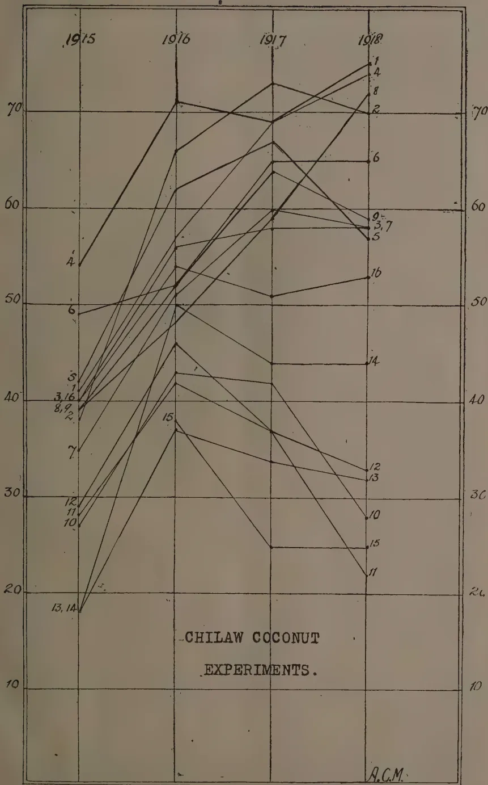
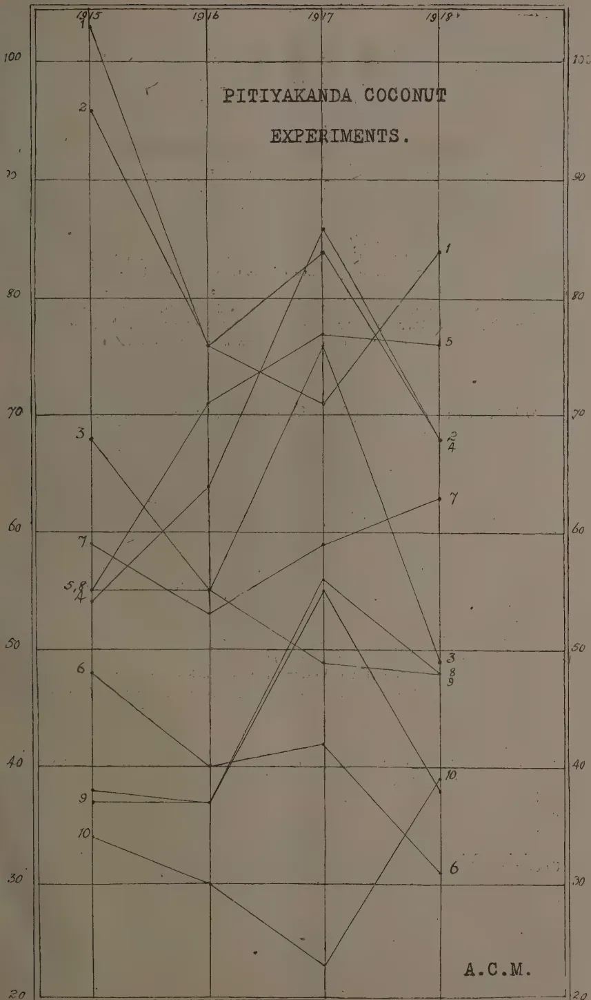

THE
TROPICAL AGRICULTURIST:
JOURNAL OF THE
CEYLON AGRICULTURAL SOCIETY.
VOL. LII.
PERADENIYA, MAY, 1919.
No. 5.
FOOD PRODUCTION COMMITTEES.
In the present number are included the minutes of Meetings of various Provincial and District Food Production Committees. These are published for general information and in the hope that they may indicate the lines on which the different Committees are endeavouring to work.
The necessity for greater food production locally was never more important than at the present time, and early steps should be taken for the South-West Monsoon season in those districts that receive rains during that season, and in the drier districts for the next North-East season.
The attention of Food Production Committees has naturally been directed towards an increase in the production of paddy. Investigations have been carried out by several Committees in regard to the lands used for paddy cultivation. When two crops are not secured annually, enquiries as to the reason for this are being made, and similar enquiries are being made into the reasons for abandoned fields. In many cases, it has been found that two crops are not raised annually from the same fields because the lands are not particularly fertile and because no applications of manures in any form are made. Similarly many fields have been abandoned for want of water, through either insufficient irrigation facilities or through breaches in tank bunds or channels.
The growth of two successive crops may be encouraged by instruction and demonstration. Several Committees have asked for the appointment of Additional Agricultural Instructors and are making arrangements for demonstrations. Cultivation competitions are being organised in some areas, and manure distribution is being encouraged through Co-operative Credit Societies.
240[May, 1919.The investigations into the reasons for abandoned fields should result in improvement, and the voluntary assistance rendered by several members of the Committees in making these enquiries with the Headmen of the district is valuable at the present moment, when it is necessary that accurate and detailed information should be available with the shortest possible delay.
For garden produce, the establishment of further experimental gardens from which seeds of high-quality produce may be distributed to village cultivators is being considered, and it is probable that these gardens can do much to encourage, by demonstration, attention to be directed to the cultivation of important food-products other than paddy. In some districts these experimental gardens have demonstrated their usefulness and should be capable of greater good under the immediate supervision of members of a Food Production Committee composed of persons well acquainted with the soil and climatic peculiarities of the district and well-informed as to its requirements and possibilities.
To assist in the co-ordination of the work of the different Committees, it is proposed to publish their minutes of proceedings from time to time. Members of one Committee will thereby be kept informed as to the action being taken by the members of the other Committees, and the agricultural public will be kept informed of the actions that are being taken on their behalf.
Members of Food Production Committees have in several districts already given up a considerable part of their leisure time to investigations into the question of local food-production. They deserve to be given every encouragement in the prosecution of these investigations and enquiries, as it is only upon such investigations and enquiries that a sound policy can be based.
The policy of the present must be an immediate increase of crops from the areas already under cultivation; facilities for the opening up of new areas; and the reclamation wherever possible of lands which have been abandoned. This policy to meet immediate needs must however not be allowed to overshadow the greater and wider needs of the Colony. There is no doubt that a greater production of foodstuffs can be raised locally, and a wide and generous policy must be devised in order to make this not only possible, but permanent.
MAY, 1919.]241Minutes of a Meeting of the Food Production Committee, Kandy District, held at the Kandy Kachcheri, on 4th March, 1919.
Present:—Messrs. W. L. Kindersley (Chairman); F. A. Stockdale, Director of Agriculture; B. G. Meaden, Divisional Irrigation Engineer, C. Drieberg, Secy., C. A. S., & Supdt. L.-C. P.; W. Molegode, S. A. I.; and W. J. L. Rogerson (Secretary).
The CHAIRMAN proposed:—
(Sgd.) W. J. L. ROGERSON,
Secretary.
Minutes of a Meeting of the Food Production Committee, Batticaloa District held at the Batticaloa Kachcheri, on 24th February, 1919.
Present:—Messrs. R. A. G. Festing, (Government Agent in the Chair), C. Harward, Divisional Irrigation Engineer; A. B. Fontyn, Assistant Conservator of Forests; Rev. Father F. Bonnel, s.j.; S. N. G. Eliyatamby
242[MAY, 1919.Mudaliyar ; C. Muttiyah, J. P. ; S. R. B. Alagaratnam, Chief Mudaliyar ; S. Kumaraswamy, and Kantappodi, Irrigation Vanniah.
CHIEF MUDALIYAR ALAGARATNAM was elected Secretary of Committee.
1. The CHAIRMAN read and explained to the meeting the original Circular No. 75 of 16th December, 1918, from the Hon'ble the Colonial Secretary regarding the grant of Crown lands on easy terms to encourage production of foodstuffs, and the reply sent thereto, No. 278 of 23rd December, 1918.
2. Read copy of the proceedings of the meeting held at the King's Pavilion, Kandy, on the 10th January, 1919, to consider proposals for increasing the food supply of the Island.
3. It was ascertained that about 4,500 acres of Crown land was available under Vakaneri ; 500 acres under Tempitiya ; and 800 acres under Unnichchai tank for munnari cultivation.
4. It was resolved that the timber on Crown land granted for cultivation should be felled and stacked on a central place in the land till it is handed over to the Forest Department by the cultivator, until which time the grantee is responsible for its safe-keeping.
5. Resolved that applicants for land should not be allowed to cultivate new lands at the expense of any of their old lands under any of the major Irrigation Works in the district, and that grants will not be renewed in cases where the grantee has failed to cultivate his old lands.
6. Resolved that lands be offered in 50-acre blocks up to the end of April, 1919 ; and that afterwards applications for small blocks be received up to end of May.
7. Resolved that the valuation to be put on the land as unopened land, shall be made known to the applicant at the time he signs the bond.
8. Resolved that in allotting the lands under Irrigation Works, as far as possible, the choice of the plots by the applicants will be considered, but the deciding factor must be the position of the land as regards the general Irrigation Scheme. As a general rule, the Irrigation Department must decide the order in which blocks can be opened.
9. Resolved that the Committee is not in favour of granting free chenas to able-bodied people at the increased rate of 3 acres per family indiscriminately.
10. Resolved that the Committee is in favour of recommending that slaughter of buffalos for food in the district be prohibited.
11. Resolved that permission to remove buffalos from this district to other districts be not granted by the Chief Headmen without previous reference to the Government Agent.
12. Resolved that in the opinion of the Committee, it is unnecessary to take any special steps in the case of temple lands as the percentage of such lands in the district is very small.
13. Read copy of letter No. 24 of 25th January, 1919, from the Director of Agriculture to the Hon'ble the Colonial Secretary, and copy of letter No. 165 of 15th February, 1919, from the Director of Agriculture, and the Committee decided that the suggestions regarding the establishment of demonstration plots in the district be further considered.
14. Resolved that the question of improving the cultivation of garden and chena produce be brought forward at the next meeting, after the members have had time to consider the subject more fully.
(Sgd.) R. A. G. FESTING,
President.
Proceedings of a Meeting of the Provincial Food Production Committee, North-Western Province, held at the Kurunegala Kachcheri, on 22nd Feb., 1919.
Present :—Messrs. C. R. Cumberland, Government Agent, N.-W. P. (President); B. G. Meaden, Divisional Irrigation Engineer; C. Drieberg, Secretary, Ceylon Agricultural Society and Superintendent, Low-Country Products; the Hon'ble MR. T. B. L. Moonemalle, Messrs. J. G. Tennekoon, Ratemahatmeya, Hiriyaia Hat-Pattu; C. M. Madawela, Proctor; P. A. C. Ekneligoda, Kachcheri Mudaliyar (Secretary).
Read (1) Government Circular No. 75 of 16th December, 1918, (2) Government Circular No. 13 of 4th February, 1919, and (3) Circular letter No. 165, of 15th February, 1919, from the Director of Agriculture.
1. Considered the question of Extension of Rice Cultivation.
(a) It was pointed out that probably more land could be cultivated under village tanks if less water was wasted, and that the pipe sluice lent itself to waste of water, it being impossible to lock or secure it in any way.
Resolved that the Director of Irrigation be asked to suggest a cheap type of sluice which can be locked.
(b) Considered whether it was possible to recommend any further large schemes for restoration or construction. An application from MR. J. DE MEL to be allowed to restore Siyambalangomuwa Wewa, was submitted to the meeting.
Resolved that it is impossible to recommend the application as it stands in view of the vagueness of its terms and the size of the scheme. If Mr. DE MEL is desirous of investing money in the production of foodstuffs, he might be advised to apply for lands under some Irrigation Scheme already completed and only awaiting development, such as Nachchaduwa.
Resolved also that Government be asked to secure a proper survey to be made of Siyambalangomuwa Wewa Scheme, with a view to deciding its feasibility and probable cost, MR. PARKER's report being out of date.
(c) Considered the question of masonry anicuts where stick dams are now used.
Resolved that a list of places where such anicuts might be constructed or restored be prepared, when further details of cost and whether proprietors benefited will pay cost, may be obtained.
(d) Considered the question of ensuring cultivation of all land already asweddumweed.
Resolved that powers be given to Village Committees to take over and let out for cultivation land not cultivated at the proper time.
2. Considered means of improving yield :—
(a) Transplanting.
Resolved that an experiment be made near the town under MR. DRIEBERG's direction.
(b) Ploughs.
Resolved that a few ploughs be got on loan, and lent to persons willing to try them, also that an experiment be tried near Kurunegala town and on land under the Deduru-Oya Scheme.
(c) Manure.
Resolved that a supply of bone-dust manure be obtained and sold to those willing to try it on paddy lands. Hiriyaia Hat-Pattu where there is a Co-operative Credit Society seems well fitted for initiating this experiment.
244[MAY. 1919.3. General.(a) Resolved that Government be asked for the services of at least one Additional Agricultural Instructor for work in connection with paddy cultivation.
(b) Resolved that future meetings be held on the last Saturday in the month at 12 noon.
(Sgd.) C. R. CUMBERLAND,
President.
Minutes of the Meeting of the Provincial Food Production Committee for the Province of Uva, held at Badulla Kachcheri on the 3rd February, 1919.
Present:—The Ratemahatmeya, Yatikinda; the Ratemahatmeya, Wellassa; and Mudaliyar A. I. Jainu Deen, J.P. & U.P.M.
Resolved to instruct Headmen to organise wild buffalo kraals when possible, to increase the number of buffalos available for cultivation.
Resolved that the Committee is of opinion that the Village Committee should have power to take over any uncultivated paddy lands and arrange for the cultivation on terms which appear to the Village Committee to be equitable.
The Committee is of opinion that 10 years should be the period of payment for sale.
Where the Ratemahatmeya certifies, a free chena permit is necessary, the Government Agent if satisfied should give one.
The limit of chena acreage in this Province is already 3 acres per family
As regards temple fields powers to be given to Gansabhawas will suffice.
Headmen to be requested to see that besides kurrakkan, Indian corn, chillies and manioc should be grown in chenas.
Blocks of land not over 5 acres in extent required by villagers for agriculture should be sold to them and not leased. Villagers have been largely discouraged from taking up land by the recently-adopted system of Leasing.
There is no large tract of land in the Province likely to attract capitalists,
(Sgd.) F. BARTLETT.
TRINCOMALEE.Minutes of a Public Meeting held at the Trincomalee Kachcheri on the 25th February, 1919, to consider proposals for increasing the Food Supply at the District, on the lines indicated in annexure to Government Circular No. 7, dated 19th January, 1919.
There were present: Mr. W. K. H. Campbell, Assistant Government Agent (in the Chair); Messrs. W. G. Vallipuram, Office Assistant to A. G. A.; F. A. Stockdale, Director of Agriculture; T. Hamer, Divisional Irrigation Engineer; E. Dassanayake, Sub-Divisional Forest Officer; M. M. Subramaniam; S. Visuvalingam; S. Tyagarajah, Proctor; J. V. Aiyampillai; C. Vallipurampillai, Mudaliyar; K. Somasundaram; K. Subramaniam, Shroff; S. E. Abdul Rasool; A. Balasuriya; Chief Headmen of Tamblegam, Koddiyur, Kaddukulam (East) and Kaddukulam (West) Pattus; Minor Headmen of the Pattus, and others.
MAY, 1919.]245The Chairman opened the meeting with a few remarks, in the course of which, he informed the meeting that Government was prepared to allow cultivators land suitable for cultivation of foodstuffs on easy terms, and emphasized the necessity of devising means for overcoming the difficulties experienced in the district from lack of capital, cattle and labour. He hoped that the Co-operative Credit Society just re-organised would meet the difficulty in regard to capital. He then called for remarks or suggestions on the subject of increased production of foodstuffs :
Chief Headman of Tamblegam made the following suggestions : (1) that advances be made by the Village Committees for cultivation of lands privately owned and not cultivated at present by the owners for want of capital ; (2) that water be issued free from the tanks; and (3) that chenas be granted to deserving villagers free of rent for three years each.
Chief Headman of Kaddukulam (East) stated that he had, of late, received several applications for Crown lands fit for chena in the villages of Kuch-chaveli and Pulmoddai, and recommended that they be given on free permits for three years to deserving villagers.
Chief Headman of Koddiyar offered the following suggestions : (1) that as water is often found to be scarce in the tanks, lands be given near the Mahaweli-ganga for paddy cultivation on free permits for 3 years ; (2) that chenas be allowed to the poor villagers for cultivation during the wet season, rent being recovered at harvest ; (3) that the Veddhas be allowed chenas free of rent. He also pointed out the great damage done to cultivation by wild pigs and elephants, and recommended the issue of licenses to the Sinhalese to cure meat of pigs as formerly done. He further suggested issue of licenses to capture buffalos free of stamp duty, or, on payment of double stamp duty after capture.
Chief Headman of Kaddukulam (West) recommended granting of chenas to his people, who are poor, and who now get their supply of vegetables and other chena products from the neighbouring district of Anuradhapura, to supplement the inadequate quantity of paddy raised in the Pattu. He urged that arrangements be made with the Forest Department to have chenas demarcated in March, in order to ensure early clearing and successful cultivation.
MR. S. TYAGARAJAH, Proctor, offered remarks, denouncing chena cultivation as the lazy man's occupation, and suggesting that all possible means be adopted to have the already-cleared lands in private hands cultivated rather than make new ventures. He pointed out that the difficulty from lack of cattle might be surmounted : (1) by setting apart suitable lands as pasture grounds in different localities ; (2) by granting free licenses to capture wild buffalos, which should remain as Government property ; (3) by adopting the use of improved ploughs which would obviate the necessity of using a large number of cattle. He also suggested practical demonstrations of ploughing and transplanting.
The Director of Agriculture then addressed the meeting generally on the remarks and suggestions made by the other speakers. He said that chena permits would be issued by the Government Agents and Assistant Government Agents at their discretion on being satisfied : (1) that their issue will not prevent paddy cultivation in the village or division, (2) that there is
246[MAY, 1919.not sufficient land for cultivation of paddy for the livelihood of the people in the village or division. With reference to the suggestion of the Chief Headman of Koddiyar that lands be given for cultivation near the Mahaveliganga, he remarked that he had found that some of those lands are at present being cultivated with tobacco which is not a food product, and impressed the desirability of inducing the people to raise foodstuffs on them. He also spoke on the new methods of cultivation to be adopted for increased production. He said that the Agricultural Instructor just appointed to the district would instruct the people in these methods, and pointed out the desirability of the Police Headman in every village having demonstration plots cultivated by himself or others.
A Committee for the district was then formed consisting of :
The Assistant Government Agent (Chairman).
The Divisional Irrigation Engineer
The Director of Agriculture
The Sub-Divisional Forest Officer
Mr. K. Vyrmuttu, Chief Headman, Koddiyar.
Mr. A. V. Ramanathan, Chief Headman, Tamblegam.
Mr. K. Sinnathamby, Police Vidhan of Kumpurupiddy.
Mr. S. Tyagarajah, Proctor, S.C.
The Office Assistant to Assistant Government Agent, as Secretary.
} As ex-officio Members.
Minutes of a Meeting of the District Food Production Committee, Trincomalee, held at the Trincomalee Kachcheri on 25th February, 1919,
There were present : Mr. W. K. H. Campbell, Assistant Government Agent (in the Chair), Mr. F. A. Stockdale, Director of Agriculture ; Mr. Thurston Hamer, Divisional Irrigation Engineer ; Mr. E. Dassanayake, Sub-Divisional Forest Officer ; Mr. K. Vyrmuttu, Chief Headman of Koddiyar ; Mr. A. V. Ramanathan, Chief Headman of Tamblegam ; Mr. V. Pinhami, Chief Headman of Kaddukulam (West) ; Mr. S. Tyagarajah, Proctor, S.C., and Mr. W. G. Vallipuram, Office Assistant to A. G. A.
The following resolutions were unanimously passed :
(1) That in the opinion of this Committee the export of buffalos outside the district for purposes of slaughter is at present being carried on to a dangerous extent to the detriment of paddy cultivation, and that it is desirable that this should be prohibited by legislation.
(2) That copy of the above resolution be sent to Committees in Anuradhapura, Mullaitivu, Batticaloa, Badulla and Hambantota districts for their information and adoption if approved.
(3) That the Committee is in favour of issue of licenses to capture wild buffalos on payment of stamp duty, but the period allowed for capture should be extended on application, unless cause is shown to the contrary.
(4) That the Chief Headmen be asked to furnish a detailed list of private lands remaining uncultivated in their respective divisions, with reasons given by the proprietors for not cultivating them.
(5) That competition plots be started in every Minor Headman's division for cultivation of paddy by improved methods, and in the Town for cultivation of garden products.
MAY, 1919.]247(6) That prizes be awarded for the competition plots as follows :—
| Koddiyar Pattu | ... 1st prize ... | Rs. 25 | |
| ... 2nd ,, ... | „ 15 | ||
| ... 3rd ,, ... | „ 15 | Rs. 55 00 | |
| Tamblegam Pattu | ... 1st prize ... | Rs. 25 | |
| ... 2nd ,, ... | „ 15 | Rs. 40 00 | |
| Kaddukulam (East) | ... .. | Rs. 25 | Rs. 25 00 |
| Kaddukulam (West) | 1st prize ... | Rs. 25 | |
| ... 2nd ,, ... | „ 10 | Rs. 35 00 | |
| Trincomalee Town | ... 1st prize ... | Rs. 25 | |
| ... 2nd ,, ... | „ 10 | Rs. 35 00 | |
| Total Rs. ... | 190 00 | ||
(7) That Government be asked to provide Rs. 150 to supplement funds raised locally for providing prizes for cultivation competition.
(8) That the prizes offered by the under-mentioned Chief Headmen be accepted with thanks, viz :—
| Mr. A. V. Ramanathan, Vanniyah | ... Rs. 15 |
| Mr. K. Vyramuttu, Vanniyah | ... „ 15 |
| Mr. V. Pinhami, Korala | ... „ 10 |
(9) That Government be asked to provide Rs. 200 towards an Agricultural Show to be held in Trincomalee Town in January, 1920.
(10) That the offer of MR. TYAGARAJAH to start a demonstration garden at once in the Town be accepted with thanks.
Proceedings of a meeting of the Matara Food Production Committee held at the Matara Kachcheri, on 14th February, 1919, at 10 a.m.
Present :—T. Reid, Esq., (Assistant Government Agent in the Chair), and the following gentlemen :—Messrs. F. J. S. Turner, J. W. R. Illangakoon, the Hon'ble Mr. O. C. Tillekeratne, Messrs. D. M. Rajapakse, W. R. Schokman, G. H. Altendoorf, C. Zanetti, Irrigation Engineer, Mudaliyars W. A. Ameresekere, S. W. Illangakoon, W. A. Perera, P. W. F. Livera, G. Gooneratne, H. E. Wickremeratne, Messrs. Barnes Samaraweera, J. E. Wijesinghe, C. C. de Saram, E. J. Buultjens, and Mr. M. J. A. Karunanayake.
The Chairman explained how the Committee came to be formed and read the names of the members selected viz : The Assistant Conservator of Forests, Matara, The Divisional Irrigation Engineer S. D. Tangalle, the Hon'ble Mr. O. C. Tillekeratne, The Mudaliyar Four Gravets, The Mudaliyar Weligam Korale, The Mudaliyar Morawak Korale, The Mudaliyar Welleboda Pattu, The Mudaliyar Kandaboda Pattu, The Mudaliyar Gangaboda Pattu, The Agricultural Instructor, Matara, The Director of Agriculture, Peradeniya, The Secretary Agricultural Society, Peradeniya, Messrs. J. W. R. Illangakoon, W. R. Schokman, D. M. Rajapakse, G. H. Altendoorf, M. Joones, Dr. V. D. Gooneratne, Muhandiram D. M. Samaraweera, Messrs. E. J. Buultjens, J. E. Wijesinghe, Barnes Samaraweera, The Chairman Morawak Korale Planters' Association, Deniyaya, and Mr. C. C. de Saram.
248[May, 1919.It was unanimously agreed that Mudaliyar W. A. Ameresekere be appointed Secretary to the Committee.
The Chairman then explained the present economic situation in the district and compared prices of produce at present and before the war, the labour situation, the cost of living, etc. The members agreed that the sketch was substantially correct.
The Chairman then explained that the district depended largely for its food supply on imports and on Hambantota produce. He also pointed out that in 1919 these imports might cease or fall off and cause a food crisis here.
It was then resolved that the problem of growing more food locally be tackled detail by detail. In each case an exact statement with statistics was first given by the Chairman, of the work already done by Government and others.
Proposals to increase food supply by intensive measures were first discussed.
Paddy.—Proposed by MR. J. W. R. ILLANGAKOON and seconded by MR. E. J. BUULTIENS that two Agricultural Instructors be appointed, one for Weligam Korale and for Gangaboda Pattu to carry out ocular demonstrations there and concentrate work each on a small area. Proposed by MR. G. H. ALTENDOORF and seconded by MR. F. J. S. TURNER that the salaries of these officers be paid from the tax levied on the produce of the fields.
Other grains, vegetables, etc.—No decision.
Chenas.—Resolved that Chenas within proposed Forest Reserves be allowed in Welleboda Pattu, as otherwise the people of that Pattu cannot secure sufficient Crown land outside these reserves as nearly all the rest of land is private property.
Resolved that a rent of fifty cents an acre fixed by the Assistant Government Agent is reasonable and that free Chenas are not needed.
Hill Paddy.—Resolved that the rent charged fifty cents an acre is reasonable.
Permits for Small Lots.—Rent for paddy land Re. 1 an acre.—Approved.
Deniyas or Glades in Proposed Crown Forests.—Resolved that these be rented out on permits.
The Chairman informed the meeting, of the easy terms offered by Government for irrigated lands.—The meeting agreed that they had no application here, where all irrigable paddy land is private property.
The Chairman read lists of new small irrigation works in hand.—No suggestion.
High Lands.—Resolved that it is neither feasible nor desirable for Government to sequester uncultivated high land or temple lands, and then cultivate them.—Agreed that paddy land is all cultivated and therefore, that no compulsion was called for.
Crown Forest Reserves.—The Committee was of opinion that it is good policy to mark these out in advance and preserve them from alienation, but that it is advisable to allow the use of them for paddy cultivation in open glades, pending their proclamation and the initiation of forest operations in these reserves.
MAY, 1919.]249Resolved that special terms be offered to capitalists who apply for high lands when they apply.—The meeting did not think that any would apply.
Fixing Minimum Prices.—No suggestion.
Cattle and Buffalos.—No suggestion.
Resolved that the Government be asked to make a grant of Rs. 500 to the Committee of the Matara Exhibition to be held in June.
Resolved that the Government be asked to make a grant of Rs. 200 to be spent on prizes for encouraging the transplanting of paddy.
Resolved that MR. E. J. BUULTJENS submit in writing, details of his scheme for an Agricultural Bank or a District Co-operative Credit Society; and also details of a Scheme to secure small plots of land for poor people.
Resolved that the Executive of this Committee be the Assistant Government Agent and his Officers, and that the Committee be merely an Advisory one.
(Sgd.) T. REID.
President.
Proceedings of a Meeting of the Hambantota District Food Production Committee held at the Tangalla Rest House, at 10 a.m. on the 18th February, 1919.
Present: The Assistant Government Agent, Hambantota (Chairman), The Mudaliyar Giruwa Pattu (West); the Mudaliyar Magam Pattu; the Muhandiram Giruwa Pattu (West); the Muhandiram Magam Pattu; Mudaliyar J. H. Bahar; Rev. Father P. Cooreman, S.J.; Mr. V. S. Wickramanayake; Mr. M. J. A. Karunanayake, Agricultural Instructor; Mr. A. Wickremasekera, Kachcheri Mudaliyar (Hony. Secretary).
The object of the meeting was explained by the Assistant Government Agent. Government Circular No. 75 of 16th Dec. 1918 was read out and explained. MUDALIYAR BAHAR pointed out the difficulty of getting a sufficient labour supply and suggested getting down people from Batticaloa. With a view of increasing the labour supply, MR. WICKREMANAYAKE, suggested giving a larger share of the crop to cultivators, say half-share. He also suggested the issue of licenses for the capture of buffalos for agricultural purposes from the Yala Sanctuary. The Assistant Government Agent stated that it had been decided to issue licenses to capture buffalos in Magam Pattu outside the Resident Sportsmen's Reserve and the Yala Sanctuary, and that it was desirable to await the results of this step. REVD. FATHER COOREMAN drew attention to the question of providing grazing grounds. MUDALIYAR BAHAR stated that a large number of his cattle had perished for want of grazing. The Assistant Government Agent stated that Government had been communicated with on the subject some time back and that no decision has yet been arrived at. MR. WICKREMANAYAKE submitted the desirability of grants of land for restoring abandoned tanks. Mudaliyar Magam Pattu also spoke. The Assistant Government Agent explained that such work was not attended with success in some other districts.
It was decided that it is desirable to apply the Leasing system referred to in Circular No. 75 to land under the Kirinde-Oya Left Bank Scheme. At present no land was available under the Walawe Right Bank Scheme.
250[MAY, 1919.Mudaliyar Giruwa Pattu (West) stated that no land was available under the Irrigation Scheme in the West Giruwa Pattu. He considered the possibility of bringing about 800 acres under irrigation by an extension of the Mandaduwa Channel at Bedigama.
As regards the question of labour supply for Tissa, Mudaliyar Giruwa Pattu (West) stated that further supply of labour from West Giruwa Pattu cannot be expected.
Mudaliyar Giruwa Pattu (West) inquired about the advantage of transplanting and the Agricultural Instructor explained.
The Assistant Government Agent desired that the Agricultural Instructor should go round the villages and explain to the villagers the procedure and the advantage of transplanting.
Mudaliyar Giruwa Pattu (West) suggested the appointment of a separate Instructor for the District.
Resolved that it is desirable to secure the services of a separate Agricultural Instructor for the Hambantota District.
Considered the question of compelling the land-owners to cultivate their waste and uncultivated land.—Resolved not to enforce a rule to this effect in this district.
It was considered desirable that the chena cultivators be allowed payment of chena rent when the crops are ripe.
It was considered not desirable to allow more than 3 acres to each family in West Giruwa Pattu.
It was considered desirable to allow more than 3 acres to villagers in East Giruwa Pattu and Magam Pattu entirely depending on chena cultivation.
Temple Lands Cultivation.—Resolved that it is not desirable to enforce the cultivation of these lands.
Surplus Rice—No surplus is anticipated.
Read memo. of MR. DRIEBERG re rotation of chena crops.—It was decided to leave the matter as it stands in the hands of the villagers.
Decided that the cultivation of chenas for 3 consecutive years in this district is not practicable.
Slaughter of Buffalos.—No slaughter is carried on in this district.—Resolved that it is desirable that the transport of buffalos from this district should be prohibited and that the slaughter of buffalos should also be prohibited.
Sale of Small Lots to Villagers.—Decided that it is desirable to rent out small plots of land not more than 3 acres to villagers for gardens and buildings or for paddy.
Leasing of Lands to Capitalists.—It was considered that no modification of the present Scheme is required.
REV. FATHER COOREMAN desired that Government should take up the opening of the Andalla Road.
The meeting then terminated.
(Sgd.) W. L. MURPHY.
President.
Minutes of a Meeting of the Matale Food Production Committee held at the Kachcheri, Matale, on March 1st, 1919, at 2 p.m.
Present :—The Assistant Government Agent, Matale ; the Director of Agriculture ; the Divisional Irrigation Engineer ; the Ratemahatmeya, Matale South ; the Ratemahatmeya, Matale North ; the Ratemahatmeya, Matale East . Mr. H. D. Garrick, Mr. R. A. Senior-White, Mr. A. B. Thomson, Mr C. P. Anderson, Mr. Jas. Barber and Messrs. A. Madanayake and V. G. Perera, Agricultural Instructors.
Read the report of the proceedings of the Durbar held at the King's Pavilion, Kandy, on January 10th, 1919.
Considered the question of securing the cultivation of uncultivated paddy lands.—Resolved that this Committee is of opinion that the strict application of Rule No. 23 of the Irrigation Rules for the Matale district published in the Gazette of October 7, 1898, is sufficient to secure the object aimed at and that further compulsory powers need not be taken.
Considered whether the extension of the system of chena cultivation on Crown lands is desirable, and whether the issue of free permits is expedient or necessary. The Chairman explained that in this district there is at present no restriction on the issue of chena permits for cultivation of foodstuffs on Crown lands at the rate of three acres per family and at a rental of Re. 1 per acre provided that the jungle is of not more than ten years' growth ; that free permits for cultivation of such products on claimed chenas on which the jungle is of not more than ten years' growth are issued pending settlement of the lands under the Waste Lands Ordinance ; and that he has recommended in his report on Government Circular No. 75 of December 16, 1918, that so long as the present stringency in the food situation continues, the age-limit of the jungle growth on lands allowed for chena cultivation be extended up to 15 years, as better crops could thus be secured.—Resolved that the Committee does not consider the extension of the system of free permits for chenas (admittedly Crown) necessary or desirable, except in exceptional cases at the discretion of the Assistant Government Agent and supports the Assistant Government Agent's recommendation for the raising of the jungle age-limit from 10 to 15 years.
Considered the question of ensuring the proper cultivation of temple lands.—Resolved that no special action is considered necessary as all temple paddy lands are believed to be regularly cultivated.
Considered the question of prohibiting the slaughter of buffalos for food.—Resolved that in view of the fact that buffalos are exported from the district for slaughter for food and that there is a shortage of buffalos for paddy cultivation, the Committee recommends that Government should prohibit the export of buffalos from the district.
Considered the question of the restoration of abandoned tanks and amunas.—Resolved that the question of restoring the Kalundewa tank be investigated.
Considered Government petition No. 35608 of December 10, 1918, in regard to the restoration of an anicut at Pallegama in Laggala, Pallesiya Pattu.—Resolved that the Committee endorse the report of the Assistant Government Agent that this scheme is not feasible.
252[MAY, 1919.Read Circular No. 13 of February 4, 1919, from the Hon'ble the Colonial Secretary.
Considered letter No. 165 of February 15, 1919, from the Director of Agriculture to the Assistant Government Agent, Matale.—Resolved: (a) that the Committee meet monthly at the Kachcheri on the third Wednesday of each month at 2 p.m., (b) that at these monthly meetings the Agricultural Instructors of the district be present for consideration of: (i) their monthly reports for the previous month, which reports shall be forwarded by the Instructors to the Honorary Secretary on or before the 7th of each month for transmission to the Director of Agriculture, who will return them to the Chairman with his remarks before the date of the monthly meeting, (ii) their work for the current month, (iii) their circuit programme for the following month, which after being approved shall be forwarded to the Secretary of the Agricultural Society for formal sanction; (c) that copies of minutes of meetings be transmitted to the Director of Agriculture for publication at his discretion of the whole or any part thereof in the TROPICAL AGRICULTURIST; (d) that the holding of village agricultural shows, paddy field, garden and chena competitions be encouraged; (e) that a chena experiment station be opened at Paldeniya provided that funds are available; (f) that the Director of Agriculture do consider the question of allowing the Committee a measure of control over the cultivation of school gardens; (g) that the members of the Committee individually do endeavour to encourage among the villagers improved methods of ploughing, cultivation, seed selection and transplanting; (h) that a Sub-Committee consisting of the Chairman, Mr. R. A. Senior-White and Mr. A. B. Thomson be hereby appointed to draw up estimates of the financial requirements for the year 1919-20 and to submit their estimates at the next meeting of the Committee; and (i) that MR. R. A. Senior-White be appointed Honorary Secretary to the Committee.
Minutes of proceedings of Meeting of the Kegalle Food Production Committee held at the Kachcheri, 15th March, 1919.
Present:—The Assistant Government Agent (in the Chair), Messrs. C. Drieberg, D. Fairweather, H. W. Boyagoda, A. E. Barrs, R. P. Seneviratne, A. A. Wickremesinghe, A. F. Gunaratna, and C. H. Crispeyn, Agricultural Instructor.
The CHAIRMAN explained the object of the meeting.
Resolved that all the Ratamahatmeyas be placed on the Committee.
Resolved that the Kelani Valley Planters' Association be asked to nominate a representative.
Resolved that the Kachcheri Mudaliyar be appointed Secretary of the Committee.
Resolved that for the present meetings be held on the 3rd Thursday of every month.
Resolved that the Ratamahatmeyas be asked for a list of irrigation works which could profitably be taken up, with amount of land available under each and that these schemes be referred to the Irrigation Department for report.
Resolved that MR. A. A. WICKREMESINGHE be asked to report in due course on his proposed paddy experiments for information of the Director of Agriculture.
MAY, 1919.]253Resolved that the Agricultural Department be applied to, for a leaflet in Sinhalese on the subject of paddy-seed selection and advantages of transplanting, and that the Agricultural Instructor concentrate his work on these points.
Resolved that the Ratemahatmeyas be asked to arrange for experimental paddy plots in different centres.
Resolved that MESSRS. HUNTER & Co. be asked to supply 4 of their improved "Goiya" ploughs for experiment and sale.
Minutes of a meeting of the Jaffna District Food Production Committee held at the Jaffna Kachcheri at 2 p.m. on Monday, March 31st, 1919.
Present:—Messrs. B. Horsburgh, G.A., N.P. (in the Chair), F. A. Stockdale, Director of Agriculture; Hon'ble Sir A. Kanagasabai; Hon'ble Mr. A. Sapapathy; Messrs. M. S. Rama'ingam, C. M. Sinnaiyah, V. Casippillai, W. Muttuveluppillai, V. Muttukumaru, K. Chinnatamby, J. N. Sandrasegara, R. R. B. Kumarakulasinghe, M. Muttukumarasamy, V. Chelliah, P. C. Nicholas and A. Charavanamuttu.
The Chairman explained the object of the meeting.
It was decided that (1) this Committee should be called "The Jaffna District Food Production Committee" and should consist of the members present and the Maniagars of the remaining divisions, viz., Valikamam (East,) Vadamaradchi (East), Karachchi Punakari, and the Islands, the Irrigation Engineer Iradamadu and the Secretary of the Ceylon Agricultural Society, with power to add to their number, and (2) the Assistant Govt. Agents should be informed that separate Committees may be formed for their districts.
MR. A. CHARAVANAMUTTU was appointed Secretary to the Committee.
The copy of the proceedings of the meeting at Kandy, received with Government Circular No. 7 of 18th January 1919 was read.
The Chairman informed the members that he had recommended to Government that in the case of the Northern Province, the maximum limit for outright sale to villagers should be 30 acres and that greater extents should be dealt with under the Leasing system.—The members unanimously approved of the Chairman's action, and were of opinion that purchasers should be allowed to pay the sale price in four yearly instalments and not ten years.
The suggestion that Village Committees should take over all uncultivated lands in private hands having been considered—it was agreed that if the owners cannot find labour to cultivate their lands, the Village Committee will be in no better position to command labour, and that no action be taken in the matter.
Grant of additional chena lands for cultivation without payment.—There are no chena lands in the Jaffna District except in the Tunukkaipattu. The Headmen there have been informed of the concessions Government is prepared to allow.
Cultivation of abandoned tanks.—Agreed that no action is necessary at present.
Capture of buffalos.—The Chairman informed the members that buffalos are found only in the divisions of Pachilappali, Karachchi Punakari and Tunukkai, and that the Headmen of these divisions have been informed
254[MAY, 1919.]that free permits will be issued to applicants for capture of buffalos for training and use in agricultural work, but not for sale.—Approved.
Purchase of surplus rice by Government.—No surplus is anticipated in the district.
Cultivation of temple lands.—None in the district.
Prohibition of the slaughter of buffalos.—No buffalos are killed for meat in the district nor any removed to Colombo for slaughter. The HON'BLE MR. SAPAPATHY said that a large number of cattle used to be removed every year from Jaffna to Colombo for slaughter, and that the reduction of their number especially after the November floods has had an adverse effect on the agricultural industry of the district.
It was unanimously resolved that owing to the late floods, the removal of black cattle of the Jaffna District beyond the Northern Province should be prohibited during the next four years.
Supervision of the work of the Agricultural Instructor, Jaffna.—It was unanimously resolved that MESSRS. W. MUDALIYAR MUTTUVELUPILLAI and GATE MUDALIYAR C. M. SINNAIYAH be appointed a Sub-Committee to direct and supervise the work of the Agricultural Instructor, Jaffna.
On the motion of the HON'BLE MR. SAPAPATHY seconded by the Hon'ble SIR A. KANAGASABAI, it was unanimously resolved that Government be requested to place a sum of money at the disposal of the Government Agent for loans to bona fide cultivators to sink wells for irrigating their lands on the following conditions, viz :—(1) the loan to be secured on the land of the borrower, (2) that half of the irrigated extent be used for growing foodstuffs, (3) the amount of the loan to be from one-half to two-thirds of the estimated cost of constructing the well, (4) the loan to be repayable within two years without interest, but the period may be allowed to extend to four years in which case interest at 5% per annum should be charged.
The question of the encouragement to be given to paddy cultivation and garden cultivation was considered.—The general opinion being that all that is at present possible is being done in the district, it was decided not to take any action in the matter except to hold a show next year.
Resolved unanimously that an Agri-Horticultural and Industrial Show under the management of this Committee be held in May-June next year, and that application be now made to Government for a grant-in-aid of Rs. 1,000 with a view to the inclusion of that amount in the Estimates of 1919-1920.
Cultivation of chenas for 3rd and 4th years.—The question does not arise in the district.
The Director of Agriculture explained that by the proper selection of seeds in Madras and British Guiana increased yields have been secured year after year and suggested that this Committee with the co-operation of the Agricultural Instructor may take steps to select seeds of paddy and vegetables. The matter was left to the Sub-Committee appointed to direct and supervise the Instructor's work.
HON'BLE SIR A. KANAGASABAI and the HON'BLE Mr. A. SAPAPATHY seconded that the names of the following gentlemen be added to this Committee, viz :—Messrs. Homer Vanniasingham, W. Doraisamy, C. Rasanayagam, T. S. Cooke, Wm. Black, S. Sabaretnam and Wm. Mather.—Carried.
MR. P. C. NICHOLAS MUDALIYAR suggested the preparation of an agricultural register for the Jaffna district by the Officers of the Agricultural Department.—The Director of Agriculture regretted that his present staff would not be able to find time to devote attention to such work.
The meeting terminated at 4 p.m.
(Sgd.) B. HORSBURGH.
President.
MAY, 1919.]
255
AVERAGE LENGTHS OF LAST MATURE LEAVES.
| Plot. | June 1914. | December 1914. | June 1915. | December 1915. | June 1916. | December 1916. | June 1917. | December 1917. | June 1918. | December 1918. |
|---|---|---|---|---|---|---|---|---|---|---|
| 1 | 60.29 | 78.85 | 107.62 | 132.52 | 153.83 | 183.54 | 204.86 | 217.46 | 228.81 | 236.93 a |
| 2 | 61.64 | 74.19 | 100.61 | 125.78 | 147.25 | 182.26 | 188.32 | 212.25 | 216.35 | 236.39 b |
| 3 | 60.99 | 74.84 | 102.58 | 128.90 | 144.76 | 177.55 | 181.86 | 214.64 | 218.27 | 231.87 c |
| 4 | 55.75 | 72.58 | 101.58 | 123.61 | 142.99 | 166.98* | 176.45 | 197.58 | 205.39 | 220.01 d |
| 5 | 50.93 | 65.83 | 97.29 | 121.52 | 143.90 | 168.70 | 188.88 | 227.54 | 233.86 | 238.04 e |
| 6 | 47.36 | 62.90 | 86.97 | 107.17 | 120.65 | 149.51 | 153.54 | 207.50 | 204.62 | 221.10 f |
| 7 | 42.64 | 54.46 | 80.94 | 117.29 | 136.65 | 160.80 | 186.48 | 215.00 | 239.00 | 246.26 g |
| 8 | 44.07 | 57.71 | 91.44 | 108.12 | 125.56 | 145.76 | 171.49 | 213.15 | 209.67 | 223.50 h |
| 9 | 46.97 | 58.88 | 80.53 | 94.91 | 105.99 | 119.71 | 136.82 | 151.23 | 156.89 | 170.10 i |
| 10 | 45.53 | 56.48 | 79.70 | 95.91 | 112.36 | 133.93 | 154.62 | 181.44 | 182.93 | 191.48 j |
| 45.85 | 56.69 | 81.83 | 97.71 | 116.78 | 134.55 | 150.06 | 174.99 | 186.53 | 225.60 k |
| Plot. | TREATMENT. | Plot. | TREATMENT. |
|---|---|---|---|
| x | 2 Trees Flowered. | d. | 11 Trees Flowered. |
| a. | 6 " | e. | 18 " |
| b. | 11 " | f. | 5 " |
| c. | 5 " | g. | 8 " |
| 1 | Ground nut cake Steamed bone meal Sulphate of Potash Bone meal |
6 | N 30 P 30 K 30 P 30. |
| 2 | Sulphate of Potash Bone meal |
7 | Green manure Basic slag Sulphate of Potash Soliubles |
| 3 | Sulphate of Potash Ground nut cake |
8 | No manure |
| 4 | Sulphate of Potash Ground nut cake |
9 | No manure, clean weeded. |
| 5 | Bone meal | 10 | Mineral mixture with Lime |
| No manure. Ploughed every month. |
Manures—were applied quantities June 1914, quantities June 1915, quantities June 1916, Plot 5 was ploughed every month during 1916. Plot 9 was clean weeded monthly until July 1916, but its appearance was so unsatisfactory that this treatment was discontinued, and an application of 20 lb. potash given. In June 1918, quantities were applied. Plot 5 was ploughed every month during 1918.
P 30
K 30
N 30
K 30
P 30
K 30
N 30
K 30
N 30
P 30
K 30
256
[MAY, 1919.
COCONUT EXPERIMENTS.
STATEMENT OF RETURNS FROM CHILAW COCONUT EXPERIMENTS PLOTS.
| Plot | No. of Palms | TREATMENT | 1915 | 1916 | 1917 | 1918 | ||||
|---|---|---|---|---|---|---|---|---|---|---|
| Yields | Yields per Palm | Yields | Yields per Palm | Yields | Yields per Palm | Yields | Yields per Palm | |||
| 1 | 47 | Clean weeded | ... | 1,931 | 2,677 | 57.0 | 3,262 | 69.2 | 3,550 | 75.5 |
| 2 | 72 | Sulphate of Ammonia 2½ lb. per palm 1915, Disc-harrowed monthly, 1916, 1917, 10 times in 1918 | ... | 2,804 | 4,810 | 66.8 | 5,267 | 73.1 | 5,082 | 70.6 |
| 3 | 89 | Ground nut cake 6 lb. per palm 1915, Crushed fish 6 lb. per palm, 1916, 1917, 1918 | ... | 3,581 | 5,018 | 56.3 | 5,217 | 58.6 | 5,127 | 58.7 |
| 4 | 81 | Steamed bone meals 8 lb. per palm, 1915, 1916, 1917, 1918 | ... | 4,429 | 5,800 | 71.6 | 5,648 | 69.7 | 5,993 | 74.0 |
| 5 | 84 | Sulphate of potash 2½ lb. per palm, 1915, 1916, 1917. Mendis's potash 5 lb. per palm, 1918 | ... | 3,542 | 5,225 | 62.2 | 5,690 | 67.7 | 4,848 | 57.9 |
| 6 | 78 | Ammonium sulphate 4 lb. per palm, 1915, 1916, 1917. Mendis's potash 5 lb. per palm, 1918 | ... | 3,829 | 4,074 | 52.2 | 5,114 | 65.5 | 5,094 | 65.3 |
| 7 | 92 | Mineral mixture 6 lb. per palm, 1915, 1916, 1917. Mendis's 7 lb. 2 oz. 1918 | ... | 3,304 | 4,714 | 51.2 | 5,585 | 60.7 | 5,392 | 58.6 |
| 8 | 68 | Lime 10 tons per acre, 1915, 1916, 1917, ½ ton in 1918. | ... | 2,674 | 3,306 | 48.6 | 4,057 | 59.6 | 4,903 | 72.1 |
| 9 | 85 | Mixed manure 10 lb. per palm, 1915, 1916, 1917. Organic mixture 12 lb. 4 oz. per palm in 1918 | ... | 3,383 | 4,499 | 52.9 | 5,464 | 64.2 | 5,098 | 59.9 |
| 10 | 107 | Mixed manure 10 lb. per palm, 1915, 1916, 1917. Mulched with husks in 1915. No treatment | ... | 2,933 | 4,616 | 43.1 | 4,576 | 42.7 | 3,034 | 28.2 |
| 11 | 100 | Mixed manure 10 lb. per palm, 1915, 1916, 1917. Mulched with husks in rings round palms | ... | 2,861 | 4,286 | 42.9 | 3,713 | 37.1 | 2,271 | 22.7 |
| 12 | 101 | Ploughed and disced | ... | 2,936 | 4,691 | 46.4 | 3,772 | 37.3 | 3,375 | 33.4 |
| 13 | 99 | Ploughed and disced. Mixed manure 1917. Organic mixture 12 lb. 4 oz. per palm in 1918 | ... | 1,859 | 3,694 | 37.3 | 3,384 | 34.1 | 3,232 | 32.6 |
| 14 | 46 | Dug with mamoty and mulched with leaves | ... | 2,338 | 2,294 | 50.0 | 2,054 | 44.6 | 1,918 | 44.7 |
| 15 | 81 | Watered | ... | — | 3,087 | 38.1 | 2,094 | 25.8 | 2,026 | 25.0 |
| 16 | 59 | No treatment (Store. etc.) | ... | 2,373 | 3,222 | 54.6 | 3,055 | 51.7 | 3,154 | 53.4 |
MAY, 1919.]
257

CHILAW COCONUT EXPERIMENTS.
| Year | 1 | 2 | 3 | 4 | 5 | 6 | 7 | 8 | 9 | 10 | 11 | 12 | 13 | 14 | 15 | 16 |
|---|---|---|---|---|---|---|---|---|---|---|---|---|---|---|---|---|
| 1915 | 4 | 6 | 5 | 1 | 3, 16 | 8, 9 | 2 | 7 | 12 | 11 | 10 | 13, 14 | ||||
| 1916 | 70 | 65 | 55 | 50 | 45 | 42 | 40 | 38 | 35 | 32 | 28 | 25 | 22 | |||
| 1917 | 68 | 65 | 62 | 58 | 55 | 52 | 48 | 45 | 42 | 38 | 35 | 32 | 28 | |||
| 1918 | 74 | 72 | 68 | 65 | 58 | 55 | 52 | 50 | 45 | 42 | 38 | 35 | 32 |
A.C.M.
258[MAY, 1919.The results of coconut experiments at Pitiyakanda have been as follows:—
| Plot Treatment | 1917 | 1918 | Nuts per tree | ||||
|---|---|---|---|---|---|---|---|
| 1914 | 1915 | 1916 | 1917 | 1918 | |||
| 1. Estate Mixture - | No manuring | — | 63 | 103 | 76 | 71 | 84 |
| 2. Lime - | Lime broadcasted | — | 59 | 96 | 76 | 84 | 68 |
| 3. Ploughed twice yearly - | Ploughed with village plough | — | 37 | 68 | 55 | 76 | 49 |
| 4. Soil stirred monthly - | Clean weeded and stir soil | Clean weeded | 28 | 54 | 64 | 86 | 68 |
| 5. Cattle tied - | Cattle tied round trees | Cattle tied round trees | 44 | 55 | 71 | 77 | 76 |
| 6. Control in grass - | Control kept in grass | — | 43 | 48 | 40 | 42 | 31 |
| 7. Phosphoric Acid omitted - | No manuring | — | 49 | 59 | 53 | 59 | 63 |
| 8. Mineral mixture - | do | — | 49 | 55 | 55 | 49 | 48 |
| 9. Organic mixture - | do | — | 30 | 37 | 37 | 56 | 48 |
| 10. Control - | Control (No. Tephrosia planted) | — | 27 | 34 | 30 | 23 | 39 |
| 11. Potash omitted - | No manuring | — | 53 | 38 | 37 | 55 | 38 |
| 1914 | 1915 | 1916 | 1917 | 1918 | |
|---|---|---|---|---|---|
| January ... .. | 2'47 | 10'74 | '67 | 5'80 | 6'43 |
| February ... .. | '22 | 4'62 | '03 | 7'04 | '07 |
| March ... .. | 12'21 | 3'24 | 6'59 | 12'83 | 2'68 |
| April ... .. | 9'98 | 8'03 | 10'51 | 2'42 | 8'20 |
| May ... .. | 8'59 | 2'55 | 8'38 | 8'44 | 11'27 |
| June ... .. | 13'18 | 9'16 | 13'62 | 11'14 | 10'07 |
| July ... .. | 1'94 | 12'40 | 12'19 | 4'49 | 2'51 |
| August ... .. | 5'31 | '88 | 7'73 | 4'08 | 2'65 |
| September ... .. | 10'94 | 8'18 | 5'61 | 16'07 | 1'99 |
| October ... .. | 18'66 | 5'25 | 10'12 | 8'93 | 12'30 |
| November ... .. | 11'91 | 14'86 | 14'47 | 15'68 | 20'04 |
| December ... .. | 16'24 | 7'66 | 3'60 | 3'88 | 12'65 |
| Total... .. | 111'65 | 87'57 | 93'52 | 100'80 | 90'86 |
MAY, 1919.]
259

The graph displays the results of coconut experiments over four years. The Y-axis represents a measurement in A.C.M., ranging from 20 to 100. The X-axis represents the years 1915, 1916, 1917, and 1918. The data points are connected by lines to show the progression of each series. The series are labeled with numbers 1 through 10.
| Year | 1 | 2 | 3 | 4 | 5 | 6 | 7 | 8 | 9 | 10 |
|---|---|---|---|---|---|---|---|---|---|---|
| 1915 | 100 | 85 | 68 | 55 | 55 | 48 | 58 | 55 | 38 | 35 |
| 1916 | 75 | 75 | 65 | 55 | 75 | 40 | 65 | 55 | 38 | 38 |
| 1917 | 85 | 85 | 75 | 55 | 75 | 45 | 55 | 55 | 38 | 45 |
| 1918 | 85 | 68 | 48 | 48 | 75 | 30 | 65 | 48 | 38 | 38 |
A.C.M.
260[MAY, 1919.In Assam,* experimental work on rice is carried on at Karinganj which is situated in the Surma Valley, an extensive rice-growing tract. The liability to floods is characteristic of the rice lands in this locality. The rice-breeding experiments were started in 1913-1914 and it was hoped to obtain definite results after 3 or 4 years' work. The floods have interfered with the continuity of the experiments so that a further year or two will be required before definite results can be expected.
The rice-breeding experiments were arranged after a consultation between MR. A. G. BIRT, Deputy-Director of Agriculture, RAI BAHADUR B. C. BASU, Special Officer for Agriculture, and MR. G. B. HECTOR, Economic Botanist, Bengal.
The method of breeding followed can be detailed under four seasons' work :—
First Season :—From ordinary village seeds grow as many local varieties of rice of each class as can be procured. Pick out from each as many distinct types as can be detected while the crop is still standing in the field, each type being represented by the ripe ears taken from a single plant.
Second Season :—Grow the various lots of seed thus obtained in small plots side by side to test whether these types are constant and therefore pure or whether they split as the result of previous crossing, and secondly, to compare the pure types in regard to yielding power and other characters. A clear space of three to six feet around each plot is kept in order to minimise the risk of intercrossing between adjacent types.
Third Season :—Take the pure types and grow them again in order to confirm the results of the previous season as to their respective merits. If necessary grow them again for another season.
Finally :—Propagate these selected pure lines on a field scale for the purpose of distributing the produce as seed.
The experiment was commenced with four classes of rice, viz :—
(1) Early Aus rice, which is usually grown broadcast and of which two crops may be taken in the course of a year.
(2) Transplanted Aus (3) Sail or winter rice and (4) Asra, which comprises the comparatively short-stemmed rices of Aman or swamp winter rice, and which is capable of being grown either broadcast or transplanted.
Owing to the floods, all work with late transplanted rices was abandoned and it was decided to restrict the work for some years to come to (1) early Aus which was spared by the 1915 rice and (2) Sail transplanted winter rice which forms the most important class of rice grown in the country.
Early Aus :—This class comprises three sub-classes of rice viz.—Murali, Chengri and Dumai. These differ from each other in regard to the depth of water which they can stand during the later stages of growth and the time they take from sowing to harvest. A total of 161 distinct types was obtained by the selection work done in 1914. Early in 1915 these types were sown but destroyed by the July flood of that year. Duplicate halves of the seed of 57 of these types had been kept in reserve and with these seeds the work was
* Extracted for the most part from the Annual Report of the Department of Agriculture, Assam for the year ending June, 1918.
MAY, 1919.]261continued in that year. These 57 types were sown in September and reaped in December, 1915. The yields were found to vary within very wide limits. From the seed thus obtained three further series of plots were sown in May, 1916—the third generation from the first selected types. The variations in yield among the plots of the third generation were considerable and not sufficiently in agreement with the yields obtained in the first two generations, to enable a selection to be made. The tests in the fourth generation gave a few varieties which did well in 1916 and gave a heavy out-turn in the previous season but as yet no variety has been found sufficiently outstanding to justify any recommendations being made. The work is at present with the seed of the sixth generation and a register of the pure cultures is kept with a view to comparing the relative merits of each type.
Sail rice :—In 1915, 580 types were separated, these were destroyed by the floods of July. For the purpose of making the primary selection of types for a fresh start, seeds of 148 varieties of this class of rice were then collected, chiefly from the Sylhet district, a few from the Sibrajar district and some being the produce of the farm itself. Each variety of Sail was described in detail and the particulars entered in a register kept on the farm. Five additional types were included in 1916 bringing the total up to 153 all of which were grown as pure line cultures in 1917. These 153 types were found to include a number of specially fine rices which are grown on a very small scale for luxurious tastes or special purposes. As these varieties give very poor yields they have been discarded. A number of varieties were found to have an objectionable amount of awns or to be otherwise undesirable, these were also rejected. The work is now carried on with 109 types.
Weeding :—As further evidence of the complexity and magnitude of this sort of experimental work with rice is the difficulty experienced in avoiding plants of a different type from the original selection appearing as weeds and to be recognised only at harvest time. Paddy seeds that have fallen on the soil retain their germinating capacity for a very long time. In order to free the experimental area from any such seeds, it has been found necessary to prepare the land a number of times and to allow two weeks or so to elapse between one preparation and the next so as to permit stray seeds to germinate. Before it was considered safe to plant the pure types these experimental plots had to be prepared six times. In spite of these precautions, plants of a different type are occasionally found. These are believed to be washed in by flood water or carried by implements or to be the product of cross-fertilisation.
Demonstration work :—Apart from this purely research work on rice, agricultural demonstrations are carried out at various centres with manures and varieties. Summarizing the results obtained at various centres the following averages are shown as increases per acre in lb. of grain :—
| Green manure alone | ... | ... | 316 lb. | increase per acre |
| Bone meal | ... | ... | 852 | " " |
| Flour phosphate | ... | ... | 1,002 | " " |
| Bone meal and green manure | ... | ... | 870 | " " |
| Flour phosphate and green manure | 722 | " " |
These results appear to show that whilst green manure gives a very favourable average increase, yet when used with bone meal or phosphate it does not add to the increase. In fact with flour phosphate the average result is worse when used with green manure than when used alone. These results, however, leave no room for doubt that in the demonstration centres phosphate in some form is the prime requirement of the rice crop.
The variety demonstration tests have brought out in the majority of the centres the superiority of MR. HECTOR'S selected type Indrasail from Bengal against the best of the local varieties. Cultivators are very readily impressed by such demonstration tests and a large demand for seed of Indrasail has arisen.
H. L. VAN BUUREN.
262[MAY, 1919.This Show, held under the auspices of the Krusikarmawardane Society of the Meda Pattu, Siyane Korale (West), was held at the Miriswatte Gansabhawa hall on Saturday, the 5th April, 1919. It was opened at 2 p.m., by MR. C. DRIEBERG, Secretary, Ceylon Agricultural Society. After the Annual Report of the Society was read and adopted, MR. DRIEBERG addressed the gathering and congratulated the members on the careful and steady work carried on by the Society, and explained to them the urgent necessity of improving the foodstuffs of the country.
RANAWEERAGE DON CAROLIS APPUHAMY of Heneratgoda was the recipient of a bronze medal awarded by the Ceylon Agricultural Society for the best village garden.
Exhibits were only received from the Demonstration Gardens opened by the Society and the registered village gardens, and as a result there was general satisfaction because no exhibits grown or produced outside the Korale were placed for competition. The Gansabhawa hall, which had been tastefully decorated for the occasion, was fully occupied by the exhibits.
On the whole the exhibits were of a high standard. There were good specimens of bandakka, luffa and snake-gourd. Curry plantains were not well represented. Brinjals were not up to standard. There were very good specimens of beans, including the fleshy beans, recently introduced, radish and country cucumber. Only one exhibit of tomato was shown, but it was of a high standard.
Tubers were fairly good and the following varieties were shown:—cassava, sweet potato, Jaffna yams, rata-ala, kiri-kondol, dehi-ala, arrow-root and innala.
Curry stuffs.—Chillies were good., Onions, anise, ginger and turmeric were also shown though in small quantities.
Grains and Pulses.—Indian corn, poor. There were particularly good exhibits of field and garden dhall. Garden dhall was also shown in the green state to impress on the people that it is best used in that form. Only one exhibit of green gram was received. One of the Demonstration Gardens exhibited a good collection of different varieties of seeds. These were distributed among those present, after the Show was over, and they were eagerly sought for. It was creditable that so good a Show was made during a period of drought like that recently experienced.
The awards were distributed by MUDALIYAR L. DE LIVERA, President of the Society, at the Annual General Meeting which was held at 4 p.m., in the Market hall. The appointment of Office-Bearers and discussion of agricultural matters were other items of work done at the meeting.
The success of the Show was due to the efforts of MUDALIYAR L. DE LIVERA, President of the Society, Mr. PETER WERASEKERE, Vice-President and Mr. S. C. WICKREMASINHE, its energetic Secretary.
L. DE Z. JAYATILLEKE,
Inspector of School Gardens.
H. E. DURHAM.
Organic manures, which are much in vogue at the present time, have chiefly been advocated from the nitrogen point of view. Some experiments which I commenced in order to elucidate certain points in soil analysis were eventually directed towards the determination of the effect of fermentations of carbohydrate material (starch and sugar) in soil samples upon the amounts of "available" phosphoric acid and potash. It was hoped to make a number of observations upon soils of various geological origin, and a collection of several was made, but the war started and interfered with including in experiments so complete a series as was intended. The present importance of the manure question may make the publication of some results useful, even if only to stimulate work on similar lines on a larger scale than can be attempted single-handed.
In most cases the soils were taken from the top nine inches of 'old pasture land for the sake of uniformity. Whilst still fresh, they were sifted through a 3 m/m gauze and quantities of about 150 grms. weighed out; about 1.2 grms. of starch (in earlier trials cane sugar), i.e., to make one per cent. on the air-dry weight, was added simply or with further addition of one per cent. calcium carbonate to duplicate samples. The air-dry weight was determined. The fermentation lots were each given 100 cc. of water, and then left at room temperature for bacterial action to proceed. Eventually water was added to make up to tenfold the air-dry weight and a corresponding amount of citric acid to make the standard one per cent. solution. Also citric extracts were made of the unfermented soil; it seemed undesirable to introduce factors other than those of citric acid extraction or comparative values would be destroyed.
The results which are due to the survival of and activity of the bacteria, which were present in the different samples, no doubt would differ from those obtained from soil in situ, chiefly perhaps from the over-saturation with water in the trials, without which it would be difficult to attain uniformity. The odours developed during the fermentations showed that markedly different bacteria were at work in the various samples:—
| Source. | Formation. | Odour developed. |
|---|---|---|
| Farm C.—Long-neglected pasture | Old redstone | Very strong butyric |
| Farm W.—Manured orchard pasture | Ditto | Indol-like, eventually stale, sewer-gas-like |
| Budleigh.—Recently ploughed pasture | Banter Triassic | Slight, butyric |
| Source. | Formation. | Odour development. |
|---|---|---|
| S. 1.—Orchard pasture | Granitic | Sweetish, latter faint indol |
| S. 2.—Garden soil near by S. 1 | Ditto | Sweetish, no indol |
| Alpine.— Le Lautaret M. Cenisio |
Igneous Limestone |
Mawkish and musty None distinctive or marked |
| Brecon Beacons.— Hill pasture |
Black acid, peaty layer overlying old red sandstone |
Mawkish and musty |
| Netley.—Old pasture | Flint gravel drifts | Slowly developed slight butyric |
It may be noted that in all cases the liquid eventually became strongly alkaline, any initial acidity having been overcome, as is the case with pathogenic bacteria when carbohydrate material is not too abundant.
In regard to phosphoric determinations in general, it is unfortunate that they are largely unreliable because the prescribed routine includes an actual burning of the organic material (including a large quantity of citric acid), and this causes appreciable, if not often important, losses. In order to avoid such losses, the "incinerations" have been done by means of nitric acid with the help of a slight amount of concentrated sulphuric acid in very ferruginous soils a certain amount of ferric phosphomolybdate is usually carried down, so that re-precipitation is necessary. Further, care must be taken during the citric acid extraction to avoid undue shaking, such being limited to a mere mixing to ensure uniformity; and repeated sedimentation is preferable to filtration. The work of DR. E. J. RUSSELL and J. A. PRESCOT (JL. AGRIC. SCI. VIII., 1916, p. 65) has shown the serious loss of phosphoric acid which ensues after vigorous shaking, especially with inorganic acids; though these authors elaborately ascribe the loss to "absorption," it seems likely that it is merely a case of surface aggregations of colloids as described by W. RAMSDEN (Separation of solids in the surface layers of solutions, etc., PROC. ROY. SOC. Vol. 72, 1903, p. 156), who was able to obtain almost complete separation of certain colloid materials by means of simple shaking. It seems not unlikely that in the case of the shaken soil extracts some colloid silico-phosphoric complex was involved:—
| Soil. | Phosphoric Acid. | Potash. | Silica. |
|---|---|---|---|
| Farm C. Citric Ext. ... | 0.0075 | 0.0169 | 0.0438 |
| Jan. 1914 Ditto after ferment. | 0.0096 | 0.0879 | 0.0768 |
| Farm W. Citric Ext. ... | 0.0079 (Not determined) | 0.0472 | |
| Jan. 1914 Ditto after ferment. | 0.0243 | " | 0.084 |
| Ditto ditto (Stood 40 months) ... |
0.0252 | " | 0.084 |
| Budleigh Citric Ext. ... | 0.0121 | " | 0.098 |
| Oct. 1915 Ditto after ferment. starch only ... |
0.0338 | " | 0.135 |
| Starch and CaCO3 ... | 0.0366 | " | 0.176 |
It will be seen that the amounts of "available" phosphoric acid and potash—that is, those amounts taken up by standard citric acid extraction may be very appreciably increased by the soil having undergone a fermentation process with its own bacteria or some of them. But to my mind, of greater importance from the analytical point of view for an understanding of soil chemistry is the increase in soluble silica, for it points to a loosening of the bonds of some silica complex to a more soluble form. Soil chemistry and soil analysis grope in the dark until we have some insight and means of recognition of the composition of silica complexes, on the one hand with alumina, iron, etc., on the other with phosphates, chlorides, etc., not to mention organic components. It is generally admitted that chemical soil analyses leave much to be desired, and indeed are of little value unless the process used is given, and I imagine that this condition will persist until we can estimate the various useful and useless silica complexes and the liability of constituents to form or destroy these complexes when manures of sorts are added. Whilst some tend to decry the chemical side of the soil problem, it surely cannot be a matter of indifference when one soil contains 1% of potash and another but a mere fraction of that amount; what is wanted is some scheme to cause the former soil to yield up its potash rather than adding more, as must be done to the latter; so far, amelioration with lime is our chief stand-by. And here I may note that the addition of carbonate of lime aided the fermentative liberation of phosphoric acid (vide Budleigh above) whilst an addition of 1% quicklime to Farm W. soil only raised the phosphoric acid to 0.0118 (as against 0.0243 with the fermentation) associated with which was a slight depression of the solubilised silica, viz., 0.045 (as against 0.0472 unfermented, and 0.084 fermented); Farm C. soil behaved similarly.
It would be imprudent, if not impossible to give an account of the chemical changes which occur during these fermentations whether in the laboratory or the field. But one may broadly outline some of the factors and probabilities.
(1) The nature of the bacteria flora will direct changes one way or another. The simplest test of the odour liberated, which is noted above, forms a rough index. And a wide field for inquiry is open by trials of the mixed flora of dung of various animals on given soils.
(2) The nature of the fermentable or putrescible material present or added to the soil and also the amounts thereof will be of importance, for instance in favouring or inhibiting certain primary and secondary products, such as organic acids or eventual salts thereof, which may, of themselves, have some direct solvent powers on soil constituents.
(3) The chemical nature of the simple and complex bodies present in the soil. Amongst these it may be that substances present perhaps only in small or minute amounts may play an important part (catalysts) in effecting changes which are not produced, or only in a much slower manner, in their absence.
266[MAY, 1919.]At any rate, the reducing action in many early stages of fermentations must be of importance, as when the less soluble iron (ferric) becomes reduced to more soluble iron (ferrous) compounds, or sulphates reduced to sulphides, which will have a direct effect upon some other compounds. The recent work on the direct effect of calcium sulphide used as an ameliorating agent, and the older practice of using green copper as (ferro sulphate) may be mentioned in this connection.
The practice of green manuring or digging in a green crop raised specially for the purpose supplies more readily fermentable material than half-rotten straw or peat-moss litter; or again, than the saw dust of recent stable manures. The report of the results following fallowing of the Hoos field (ROTHAMSTED ANN, REP., 1913), and the heavy crops obtained thereafter may be placed in the same category.
Next I come to the rubbish heap or "Compost," especially when built up on the plan much adopted in France of placing alternate layers of refuse and soil, or when containing a quantity of uprooted weeds with adherent earth; here conditions are favourable to decomposition of insoluble mineral compounds as in the bottle in the laboratory. Having such considerations in mind, and having been unable to get stable manure except at prohibitive rates for cartage, I cast round for a means of making the compost more valuable. The procedure adopted was to sprinkle the material as it was turned over layer by layer with basic-slag in order to enhance the phosphorus content and in the hope of causing this costive agent to yield its virtues in readily available form. At the same time a sprinkling of lime was given, and through the early summer a covering of lawn mowings was added to kill the superficial growth of weeds and also retain heat in the heap. Though no analyses have been done and no control observations were possible—in fact the whole preparation was done in a purely arbitrary way—the procedure seems commendable, and where applied the various vegetables have done well, Cauliflowers perhaps particularly.
It was intended to make some observations on laboratory fermentations of basic-slag, with carbohydrate and nitrogenous pabulum for the mixed bacteria of various dungs, but hitherto it has not been possible to carry these out, so that I am not able to indicate the lines on which a complete or nearly complete liberation of the phosphoric contents may be most readily attained. With regard to potash in the weed heap, probably there will be a sufficiency among the varied constituents, but it would be profitable to know analyses of ordinary weeds, such as Groundsel, for it might sometimes be profitable to allow high-potash-collectors to grow a bit before applying the hoe and rake. If desired, bonfire ashes could be added to the compost. The following figures are re-calculated on the dry weights from the compendium of analyses given by ROBERTS "FERTILITY OF THE LAND," Macmillan Co., New York 1911:—
MAY, 1919.]267PERCENTAGES OF THE DRY-WEIGHT OF THE MATERIALS.
| Phosphoric Acid. | Potash. | ||||
|---|---|---|---|---|---|
| Alfafa (Hay) | ... | ... | 0.72 | ... | 2.11 |
| Apple prunings | ... | ... | 0.24 | ... | 0.24 |
| Beech Leaves (August) | ... | ... | 0.41 | ... | 1.0 |
| Beet (Leaves) | ... | ... | 0.82 | ... | 5.84 |
| Buckwheat (Hay) | ... | ... | 0.86 | ... | 3.42 |
| Cabbage | ... | ... | 1.56 | ... | 3.68 |
| Lettuce | ... | ... | 0.43 | ... | 2.3 |
| Lupine (Yellow) | ... | ... | 0.29 | ... | 2.11 |
| Mustard (White) | ... | ... | 1.08 | ... | 1.82 |
| Oak Leaves (? Fallen) | ... | ... | 0.24 | .. | 0.42 |
| Pea (Hay) | ... | ... | 0.82 | ... | 2.81 |
| Pear (Prunings) | ... | ... | 0.25 | ... | 0.50 |
| Potato (Haulm, July) | ... | ... | 0.77 | ... | 2.45 |
| Rhubarb (Stems and Leaves) | ... | ... | 0.3 | ... | 4.32 |
| Spinach | ... | ... | 1.0 | ... | 1.68 |
| Tobacco (Stems and Leaves) | ... | ... | 0.91 | ... | 5.08 |
| Tomato (Vine) | ... | ... | 0.24 | ... | 1.47 |
| Well-rotted Ordinary Manure | ... | ... | 1.43 | ... | 2.38 |
| Somewhat Rotted Ditto | ... | ... | 1.01 | ... | 2.52 |
| Fresh Ditto | ... | ... | 0.72 | ... | 1.80 |
It will be seen that whereas the phosphoric contents generally fall below that of manure, in some cases the potash is well above. Beet leaves, Tobacco, and Rhubarb may be noted as great potash-collectors, and it would be an important and interesting problem for the botanical physiologist to determine why these plants can or like to extract so much more potash from the soil than certain other plants. Analyses of the ornamental species of Tobacco would be also interesting as a possible means of adding to the potash value of the compost by growing them in all odd corners for the purpose. It is sometimes recommended to dig in Mustard, Spinach and Buckwheat as green manures: the potash and phosphoric values of these are good, particularly the potash in Buckwheat.
In testing a soil, especially one which has a rich reserve of phosphorus or potash, it may be worth while to determine the effect of a "fermentation" test, and thence infer that the addition of fermentable material (fallowing or green manuring) will be profitable, as an addition to, or alternative to, the incorporation of actual manure. It may be pointed out that this process is carried out by nature in many cases for the nutrition of the young seedling where the seed is surrounded by a fruit pulp of sugary material (Apple, Plum, Pumpkin, etc.) But, of course, it must be assured that a sufficiency of lime (i.e. carbonate) is present to annul the tendency to harmful sourness. A friend who farms in this neighbourhood reckons that he had one of his finest crops of Mangel Wurzels in a field in which he had ploughed a considerable quantity of straw which he could not otherwise use; this, perhaps, was due to an "availableness" of some of the residual artificials which had been applied in the past, and of which only a part is extracted by the crops.—GARDENERS' CHRONICLE.
268[MAY, 1919.We know in broad outlines the nature of the soil. It is made of rock particles and of decomposition products along with organic matter derived from plants and organisms. Of recent years we have learnt that this is all arranged like a great sponge, except that the pores are smaller, with nearly as much empty space as full space. It has a most remarkable structure that would well repay attention from a competent physicist. It behaves as if all its particles were coated with jelly; this seems the only way of explaining the peculiar phenomena of the movement and evaporation of water, the absorption of soluble substances, etc. Facts which the husbandman has collected in regard to tilth need to be examined in the light of this view: there is great scope for work here.
More remarkable still, in the interstices of the soil, and presumably on the surface of our supposed jelly, there lives a vast population of living things, most of them too small to be seen by the unaided eye, but nevertheless living, multiplying, and dying—quite as varied in their way as the living creatures on the surface of the earth that we can see, and extremely numerous. A single spoonful of soil contains more living organisms than there are men, women and children in Scotland.
We do not know very much about this population. The great difficulty is that we cannot look into the soil and see it from the point of view of a soil organism: we only get the detached, far-off view that some superman dwelling in space would get of our own lives if he could pick up the earth and examine it. We have to use indirect methods: to make observations, draw deductions, and test these by experiment, then correct them and proceed again. The existence of these organisms is a challenge to us to find out all we can about them, though our limited imaginations will prevent us from learning very much.
Now and again some one comes along with a new discovery, opening up a new field which has to be followed by a mass of patient exploration. In this way we have already learned of several hundred kinds of bacteria, of many kinds protozoa, of fungi, and of larger organisms, such as eelworms, etc., but how they live, what they do, and how they behave to one another, are questions we can as yet only vaguely answer.
The plant presents as many unsolved problems as the soil. The great fundamental process of food production is the wonderful manufacture of sugar and starch out of carbonic acid and water. No chemist could possibly do this at any price, yet in presence of sunlight the plant does it in a few minutes. If only we could do it ourselves, we could cheerfully snap our fingers at the submarine and the profiteer; we should want no Food Controller and no Rationing.
We only know in a general way the conditions the plant finds necessary for the purpose. It must have supplies of certain simple foods, which we can easily give in the form of fertilisers. It must have sufficient water, proper temperature, and absence of anything harmful to life. For the rest we know very little. MR. W. A. DAVIS has discovered certain ways of
MAY, 1919.]269analysing mixtures that used to be too complex for chemical investigation and the modern physiologist has a stock of very helpful ideas and methods. What is wanted now is a combined attack by a biochemist and a physiologist, both armed with the best methods of modern science. Until we gain a satisfactory knowledge of what is going on in the plant, we cannot hope to deal with the many plant problems of more definite agricultural interest.
Probably the domain in which most knowledge lies awaiting utilisation is in soil bacteriology. We know something about the soil organisms, not perhaps a great deal, but at any rate more than we use. We know for certain that the organisms of the soil react on the crop. Some are directly useful; they make part of the crop food; they clear away the old dead residues of previous generations of plants, and generally improve the soil for plant-growth. Others, however, harmful: some directly, through damaging the plants, such as wireworms, leather-jackets, eelworms, and the hosts of grubs, insects, fungi, and other organisms that attack crops. Others are indirectly harmful through affecting the useful organisms. We want to control these organisms and to do it in two directions: to help the useful ones; and to kill those that are harmful—the wireworms, eelworms, fruit flies, and the host of other pests from which cultivators suffer. We can never do it until we know how these organisms live, hence our absolute dependence on the knowledge gained by the purely scientific investigator. At the same time, we shall never really know the soil population until we actually control it; the two kinds of knowledge are strictly dependent the one on the other.
This necessity for study and control is not confined to soil organisms; it is true of all organisms that attack plants, and of the hosts of insect and fungoid pests that seem rather to increase than diminish. What we want to know is their mode of life, how they multiply, their likes and dislikes, and their relationship one to another. We have to do this as an intellectual necessity, for no intelligent man could see them without asking these questions. But this knowledge once gained, can also be applied to the material needs of the community. It is impossible to estimate how much is lost to the country each year through the attacks of these pests. It would be easy to argue—and no one could refute the argument—that wireworms, beetles, the various flies, fungi, etc., cost the country, several times as much each year as the whole of its agricultural research and teaching institutions put together. We have got used to them, and have the feeling that they are part of the natural order of things; but they ought to be suppressed as completely as the plague, the black death, and smallpox. They might be if we knew just how they lived, but not otherwise.
After knowledge comes control. Many efforts have been made to help the useful organisms, but as yet without definite application to farm practice. The earliest attempts consisted in inoculating specially sturdy brands of useful organisms into the soil. The method was expected to do great things; in point of fact it was in the main unsuccessful in this country, although a certain degree of success was attained in the United States and in Canada; but experience showed that inoculation was too crude to answer completely; something finer was wanted. We may yet, however, hope for success.
Our Rothamsted method of attempting to control the soil population is to kill the harmful organisms and leave the useful ones. We take advantage of the fact that the harmful ones are on the whole more easily killed than the useful ones, so we adopt the rather sledge-hammer device of killing all with low power of resistance, but sparing those of higher resistance. The method works in horticulture, but it is crude and needs much refining before it can be adopted in farm practice.—Extract from address given by DR. E. J. RUSSELL, D.Sc., F.R.S. at the Conference on the Improvement of Agriculture, R.H.A.S.
270[MAY, 1919.Since the war explosives have been expensive and they have been hard to secure. In consequence, there has been a falling away in the interest which was being taken in the subject of farming with explosives. In the early days many claims were made for explosives which had to be taken for granted. The effect of subsoiling could only be surmised. There seemed little doubt that to stir up the subsoil must make a great difference in the yield of deep-rooting crops. But there were few proofs taken over an extended period. We were interested, therefore, in some figures in the SCIENTIFIC AMERICAN, bearing on some extended experiments.
Back among the hills of Georgia an interesting experiment in subsoil blasting has been in progress for the past four years. The soil in the district is of a rich upland grade, and the subsoil is red and hard, with emphasis on the hard. In 1914, 2 acres were measured off. One was left for a check acre, the other was subsoiled with dynamite. Charges were exploded with blasting cap and fuse every 15 feet, 30 inches deep. This thoroughly shattered the hard, red clay, making cobweb fissures in all directions and thus permitting more water to enter than had before been possible. The roots also benefited by the breaking up of the subsoil, new avenues being opened up for them to go out in search of plant-food.
Both acres were planted to cotton in 1914. Both received the same cultivation and care, though the subsoiled one got a little more fertiliser than the other. The difference in this respect was not nearly enough, however, to account for the discrepancy between the yield of 1,804 lb. of seed-cotton for the blasted acre and 912 lb. for the unblasted plot.
Corn followed in 1915. This year both plots received identical treatment and fertilisation. They were both kept well worked and clean. The yield of corn in the husk was 2,614 lb. for the blasted acre, and 1,894 lb. for the other. Owing to the wet weather, it was impossible to weigh the fodder; there were, however, 225 bundles on the blasted acre against 115 bundles on the check area.
In 1916 the plots were in cotton again, and the benefits of the blasting were more pronounced than ever. From the very start of the growing season, the cotton on the subsoil acre outgrew the other, and by midsummer it was at least twice as high. It also fruited much better than that on the unblasted land, and when the yield was measured it was found to have been exactly twice as productive—2,000 lb. against 1,000 lb.
In 1917 corn was once more planted on the two test acres. The blasted acre yielded bushels of corn and three full loads of fodder; the unblasted acre, 35 bushels and scant two-and-a-half loads of fodder. The conclusion was therefore forced that the blasting had been a profitable investment. The increased yields soon took up the initial cost, leaving all subsequent crop increases as nett profit. This is good farming as well as good business.—
FARM BULLETIN IN QUEENSLAND AGRICULTURAL JOURNAL.
MAY, 1919.]271E. J. RUSSELL, D.Sc., F.R.S.
1. Ammonium nitrate is an excellent fertiliser, the nitrogen of which is worth as much as that in nitrate of soda and sulphate of ammonia. At present prices of these two fertilisers ammonium nitrate would, on the same basis, be worth £37 5s. per ton.
2. It contains more than twice as much nitrogen as nitrate of soda, and one-and-three-quarter times as much as sulphate of ammonia: it is thus the most concentrated nitrogen fertiliser obtainable on a large scale. Where 1 cwt. of nitrate of soda or cwt. of sulphate of ammonia is ordinarily used, less than cwt. of nitrate of ammonia would be required.
3. It can be applied to any crop for which nitrate of soda is suitable, but it is not superior to sulphate of ammonia for potatoes, and may be inferior. Its proper use is as a top-dressing, and not as a constituent in mixed manures.
4. Farmers must insist on having the "non-deliquescent" variety, otherwise they will certainly be inviting trouble.
5. While the material itself is not inflammable, it yet helps a fire considerably. Great care is, therefore, necessary not to store under conditions where a fire might be started.—JOURNAL OF THE BOARD OF AGRICULTURE, February, 1919.
F. S. HARRIS AND D. W. PITTMAN.
(1) There is a great need for definite information regarding the toxicity of alkali salts in the soil.
(2) This paper reports about 12,000 determinations of the effect of alkali salts on plant germination and growth under different conditions.
(3) Size of particles of a sand independent of other factors does not seem appreciably to influence the toxicity of alkali.
(4) Loam soils are more tolerant of alkali than either sand or clay. The coarser loams are more tolerant than the finer at the same moisture content, but if the heavier loams are maintained at an equivalent moisture content, they are more tolerant.
(5) Organic matter increases the resistance to alkali when the soil containing it is given sufficient moisture, but where present in large quantities, organic matter decreases the resistance, if the moisture supply is low.
(6) Increasing the moisture content of a soil up to the maximum that will produce good crops, increases resistance to alkali.
(7) The toxicity of sodium chloride and sodium sulphate seems to depend to quite an extent on the relation between concentration of salt and percentage of moisture present, while the toxicity of sodium carbonate is more largely affected by the presence of organic matter.
(8) Organic matter in the soil seems actually to remove sodium carbonate from the soil solution in large quantities.
(9) This probably explains why in experiments where sodium carbonate is added to a loam soil, it is less toxic than sodium chloride, while in field studies where the salt is determined by analyses, and in solution and sand culture studies, the sodium carbonate is more toxic.
Practical conclusions that may be drawn from these experiments are:—
(1) Loam soils and soils with a high water-holding capacity may be successfully farmed at a higher alkali content than others.
(2) Soils in which alkali reduces crop yields should be kept as moist as is compatible with good plant growth.
(3) Manure, or other organic matter, should be beneficial to alkali soils, especially those high in carbonates.—JOURN. OF AGRIC. RESEARCH, Vol. XV., No. 5.—(Summarised.)
272[MAY, 1919.Coffee maintains its position as the principal crop on European plantations, and last year the yields were much below the average. Owing to the long spell of dry weather, big yields are anticipated during the coming year.
The coffee industry throughout the year has caused much anxiety. In the first place the shipping position was by no means secure, but this was aggravated by the prohibition of coffee imports to the United Kingdom where the bulk of Uganda coffee had previously been sold. Ultimately the Board of Trade agreed that all coffee which had left estates on 23rd February, 1917, could be admitted into England, and further concessions were made by the issue of permits by the Controller of Import Restrictions, Board of Trade. It would have been more satisfactory, and entailed less correspondence and delay, had the permits been issued locally, but this could not be done.
Ultimately, however, Uganda planters were enabled to ship proportionately more coffee than other producing areas within the Empire, and thus to benefit by the full rates prevailing. Italy, France, India and the South African Union formerly took a fair amount of Uganda coffee, but Egypt and The Soudan were neglected. It is hoped, however, that a market will be found in the latter territories, which are large coffee consumers. The importation of coffee to India was prohibited on the 8th December, so as to help the industry in Southern India, and this closed one of Uganda's promising markets.
On the 25th August His Excellency the Acting Governor appointed a Committee consisting of the Director of Agriculture (Chairman), the Treasurer, the Land Officer, one member nominated by the Chamber of Commerce, and one member nominated by the Planters' Association, to consider and report whether (a) any advances were required from public funds to enable coffee-growers to tide over the present crisis and to meet recurrent expenditure for the up-keep of their coffee plantations; and (b) if so, to what extent and on what conditions.
The Committee reported that the crux of the whole situation was shipping, and there would be no necessity for advances if the shipping position could be relied upon. Meantime coffee was given the bulk of shipping space, under Uganda sundries, and new markets were looked for in South Africa and Egypt.
During the year no advances were recommended, but it is believed that advances will have to be made in the coming year, particularly in the case of those planters in the outlying parts of the Protectorate.
Practically all the coffee grown is Coffea arabica, originally introduced from Nyasaland, but the cultivation of this variety is not extending, it being replaced by Bourbon. Bourbon sells for higher prices on the home market, is said to require less pruning, having fewer and stronger branches, whilst the parchment from the older trees keeps its normal size far better than is the case with the Nyasaland variety.
MAY, 1919.]273Costa Rica is being grown to a small extent, and is claimed to be a heavy cropper, whilst the produce sells at good figures.
In the more humid parts of the Protectorate the yield of coffee fluctuates from year to year, but an exceptionally dry season has a very marked effect in ripening the bearing wood so necessary for the production of a normal crop.
Many varieties of coffee are under observation by the Department, and the best results at Kampala have been given by Coffea robusta.
The area under Coffea arabica grown by natives in Buganda Province is decreasing, and more attention is being given to the indigenous Coffea robusta.
The "Variegated Bug" has been by far the most serious insect pest during the year and is proving difficult to control, thereby causing planters much concern.
Coffee leaf disease and "die-back," were the two most serious diseases, especially amongst coffee-growing in poor soil, unpruned, overgrown with weeds, or suffering from overbearing.
It is gradually being realised that good cultivation, pruning, and plant sanitation are very necessary for good results to be obtained from coffee. A large and steady supply of labour is absolutely necessary, otherwise neglect of the growing plants is sure to follow, and from this a real recovery can never be expected.
The exports of coffee for the year were 15,362 cwt. of husked, valued at £33,278, and 4,485 cwt. of parchment valued at £6,283, a decrease of 15,778 cwt. husked valued at £48,045, and 12,988 cwt. parchment valued at £26,333 compared with the previous year. The short crop, however, was not entirely responsible for this large decrease, and shipping difficulties account for a considerable proportion.
The destination of the exports for the year is not known, but the following table given by the Hon. Chief of Customs, Mombasa, will be of interest to planters. The distribution of exports of Uganda coffee was as follows:—
| Year 1915-16. | Year 1916-17. | |
|---|---|---|
| Value. | Value. | |
| £ | £ | |
| United Kingdom ... .. | 30,844 | 91,182 |
| United States ... .. | — | 222 |
| Zanzibar ... .. | 1,391 | 2,964 |
| France ... .. | — | 8,371 |
| Italy and Italian East Africa ... .. | 1,741 | 10,115 |
| Arabia ... .. | 348 | 211 |
| South African Union ... .. | 44 | 4,963 |
| India ... .. | 325 | 7,152 |
| Egypt ... .. | 217 | — |
| Other British Possessions ... .. | 4 | 933 |
| Portuguese Possessions ... .. | — | 5 |
—ANNUAL REPT. DEPT. OF AGRIC., UGANDA PROTECTORATE. 1918.
274[MAY, 1919.W. MOLEGODE, S.A.I.
| Size of Plot: acres. | ... | Name of Crop: Paddy (Hatial). |
| Source of seed: | ... | Selected locally. |
| Date sown: | ... | In nursery September 3rd, 1918; Transplanted October 15th, 1918. |
| Date of Harvest: | ... | March 23rd, 1919. |
| How sown: | ... | Planted 3 seedlings in each hole, approximately 6 inches apart. |
| Nature of soil and manure used: ... | ... | Good paddy soil. Part gets inundated from an ela during rains. |
| General report on growth and treatment of Crop: ... | ... | Excellent growth. The field was manured with green leaf (Dadap, Kekuna and Karenda.) |
| Yield of Plot: | ... | 90 bushels. |
| Yield per acre: | ... | 60 bushels. |
| Approximate cost of cultivation and manuring of Plot: | ... | Rs. 70'60 (see details given below.) |
| Value of Crop: | ... | at Rs. 2'50 per bus. Rs. 225. Straw not bundled yet value about Rs. 15 |
| Value per acre: | ... | Rs. 150 |
| General Remarks: | ... | This field was cultivated by one of the best paddy cultivators of the village. |
| Preliminary work 8 men | ... | ... | Rs. | 4'00 |
| 1st ploughing 4 pairs buffalos | ... | ... | " | 8'00 |
| 4 men | ... | ... | " | 2'00 |
| 2nd ploughing 4 pairs buffalos | ... | ... | " | 10'00 |
| 3rd do 4 pairs do | ... | ... | " | 10'00 |
| Levelling and drainage 4 men | ... | ... | " | 2'00 |
| Transplanting at Rs. 2'50 per pela | ... | ... | " | 7'50 |
| Harvesting, 12 men | ... | ... | " | 6'00 |
| 12 women | ... | ... | " | 3'60 |
| Seed-paddy at Rs. 3'50 | ... | ... | " | 9'00 |
| Threshing, buffalos | ... | ... | " | 5'00 |
| 7 men | ... | ... | " | 3'50 |
| Rs. 70'60 | ||||
REPORT ON EIGHTEEN VARIETIES OF SOY BEANS
GROWN ON HARASBEDDE DEMONSTRATION
GARDEN.
P. B. KAPUWATTE.
| No. | Name of Variety. | Date Sown. | Date Harvested. | Yield. | Remarks. |
|---|---|---|---|---|---|
| 1 | Black late - | 4 March. | 12 Oct. | Nil. | This variety did not yield any seed. It is an excellent green manure. |
| 2 | Black early - | " " | 2 Aug. | lb. | Erect variety. |
| 3 | Yellow hilum brown - | " " | 22 Aug. | lb. | Good green manure. |
| 4 | Green yellow, long hilum, dark brown - | " " | " " | lb. | Erect variety. Has given a good yield. |
| 5 | Assam soy bean - | " " | 2 Aug. | lb. | do do |
| 6 | Chocolate - | " " | 26 Aug. | lb. | This is a twining variety and is an excellent green manure. |
| 7 | Pale Chocolate - | " " | 11 July | lb. | An early variety. Twining variety. Excellent green manure. |
| 8 | Barmeli erect - | " " | " " | lb. | An early variety. Has given a good yield. |
| 9 | Nepali erect - | " " | 2 Aug. | 40 seeds. | One plant yielded 40 seeds. Erect variety. Yields well. |
| 10 | Nepali twining - | " " | 22 Aug. | lb. | |
| 11 | Yellow erect - | " " | " " | lb. | |
| 12 | Black erect - | " " | 26 Aug. | lb. | |
| 13 | Barmeli twining - | " " | 2 Aug. | lb. | A good green manure. |
| 14 | Soy bean var bracket - | " " | 22 Aug. | lb. | Has given a good yield. |
| 15 | Soy bean var rice land - | " " | 11 July | 1 lb. | An early variety and a good yielder. |
| 16 | Black mottled tada - | " " | 22 Aug. | lb. | |
| 17 | Dull terracotta brown - | " " | — | — | |
| 18 | Dull brownish black - | " " | 22 Aug. | lb. | A good green manure. |
All the seeds sent germinated. Erect varieties give a high yield in seed. The twining varieties form excellent green manure and fodder for cattle.
276[MAY, 1919.JANUARY-MARCH 1919.
I arrived in Peradeniya on the evening of January 6th, and assumed my duties on January 7th, taking over everything from the Acting Entomologist, MR. E. R. SPEYER.
OFFICE WORK.—The card catalogue system for the notes, correspondence and specimens connected with this division was started by the Acting Entomologist, and this system is being continued with certain modifications.
The insect collection is being gradually overhauled by the Assistant Entomologist and the Laboratory Assistant under my supervision. All the good specimens are being transferred to air-tight boxes, while the poor specimens are being discarded. Collections are being made to fill up the gaps thus caused.
Breeding experiments are being carried on with some of the commoner crop pests and their insect enemies, with a view to obtaining data on their life histories and to acquiring specimens of the different stages from egg to adult. The scope of these experiments is necessarily limited at present.
The work of the Entomologist for Shot-hole Borer terminated on February 25th, and before MR. SPEYER left, I discussed the general position with him and took over all the correspondence, specimens and card catalogue notes connected with this insect. I had a practical demonstration in the manufacture of the special Shot-hole Borer soap mixture for treating infested tree stumps.
In January, I visited Alagalla and Kirklees estates in company with the Entomologist for Shot-hole Borer and had an opportunity of observing this pest under field conditions.
Towards the end of March, I paid a visit to Kirimetia estate, Kadugannawa, and inspected the tea bushes which had been treated with paint mixtures by MR. SPEYER last December. This visit has been dealt with in a separate report.
(b) Fluted Scale (Ichneumon furchasi).—Outbreaks were reported on a few estates, and the control measures recommended were the lopping and burning of heavily-infested branches, the removal of all old and large acacias, the keeping of all acacias down to a moderate size, and the encouragement of the local ladybird beetle.
MAY, 1919.]277Three consignments of Vedalia cardinalis have been received from South Africa during the quarter, and a strong consignment of Rodolia iceryae. These shipments were delayed in transit through lack of transport facilities, and in every instance the beetles had all died, evidently owing to the dry conditions prevailing in the boxes in which they were shipped.
Recent correspondence reports a shortage of Vedalia in South Africa at the present time, and it is probable that there will be no Vedalia obtainable for shipment for several months.
Other Insects.—Among the more important insects reported during the quarter, are :—
The Coffee Borer (Zeuzera coffeeae) in tea stems.
The Paddy Swarming Cutworm (Spodoptera mauritia).
Ants (Dorylus orientalis) boring in potatoes.
Aphids on tobacco leaves.
Nettle grubs on tea bushes.
Termites in tea stems.
Recommendations for control were given in each case.
Miscellaneous.—The Snail (Achatina fubica) has been aestivating underground during the recent drought. With the advent of a few good showers of rain, specimens are obtainable in larger quantities, and experiments in control are being made with various substances, including alum.
Fumigatorium.—The supervision of the Fumigatorium, Kochchicade, Colombo, has been taken over by the Entomologist, and an Assistant has been put in charge. A visit to the Fumigatorium was paid by the Mycologist and the Entomologist on February 18th, when the new Assistant was instructed in his duties.
On March 3rd and 4th, I visited the Fumigatorium to start the Assistant off and trial fumigations were held. This visit has been the subject of a special report.
J. C. HUTSON,
Entomologist.
Peradeniya, March 31st, 1919.
The practice of burning maize-stalks during the winter in order to destroy the grubs of the maize-stalk (Busseola Fusca) has the disadvantage of wasting a certain amount of humus that would otherwise be returned to the soil. In view of the fact that many farmers are anxious to follow some procedure by which they may retain the manurial value of the stalks in the rapidly-deteriorating soils of some parts of the country, and at the same time prevent the emergence of the moths, a series of experiments was conducted at Salisbury with a view to determining the depth of dry earth that would prevent emergence. It was found that when buried at a 2-inch depth most of the moths reached the surface, but all in a crippled condition, the wings being shrivelled and the insects unable to fly. When buried at 4 and 6 inches, all died in the soil without being able to reach the surface. The stalks in the field, therefore would have to be covered with loose earth to a sufficient depth during November and December when the moths are emerging. They would have to be laid along the bottom of the furrows during ploughing and sufficiently deep to escape being caught and dragged to the surface by the harrow. Certain maize-growers have reported success in carrying out these operations, which present less difficulties in the more friable soils.—REVIEW OF APPLIED ENTOMOLOGY, SEC A., February 1919.
278[MAY, 1919.E. A. ANDREWS.
The Lycaenid butterfly, Lampides (Polynomatus) bactica, L., oviposits in the flower-buds and on the pods of leguminous plants the newly-hatched larvæ boring into the pod and feeding on the seeds. When mature they emerge from the pod to pupate on the plant. This butterfly occurs in all parts of India, and it is common in Assam in the cold weather. It is also a pest of Crotalaria juncea (sunn hemp) and Cajanus indicus, two common green manure crops. No remedial measures are known except handpicking and the destruction of affected pods.
Argina argus, Koll., a Hypsid moth, oviposits on the under-side of leaves of Crotalaria spp. The eggs are laid in clusters and the larvæ have been found boring into the pods of (C. sericea) in April and feeding on the leaves of (C. striata) in May, and other species in June. Spraying is recommended in cases where the leaves only are attacked. Though it pupates in the soil, it cannot be destroyed by hoeing in the crop, as the pupal stage extends over 4-6 days only, and there are several broods in a year. A Hymenopterous parasite has been found attacking the larvæ and may prove to be of value in controlling the pest. A. cribraria, Clerck, a closely-allied species, attacks the leaves of Crotalaria sericea. There are usually three broods in the year.
Euproctis scintillans, Wik., is a lymantrid moth, the caterpillars of which attack mangos, various species of Hibiscus, sunn hemp, linseed and castor, and have been found in June feeding on the leaves of Cassia fistula. It has a larval period of a fortnight and a pupal period of four days only.
The Arctiid, Utelheisa pulchella, L., is probably the worst pest of sunn hemp in India and is very common in Assam. The eggs are laid, either singly or in small clusters, on the lower surface of the leaves of the food-plant. The larvæ hatch in 3 or 4 days, pupation being effected in a flimsy cocoon between the leaves of the plant, and the moth emerging in from 5 to 7 days: the whole life-cycle takes about a month. The plants attacked are Crotalaria juncea, C. striata, and other species. Remedial measures are very difficult, spraying and hand-picking being useful on small plots, but impracticable in the field. The chief hope of control lies in the possible discovery of a larval parasite, though spraying with lead chromate might be of value.
The larva of the Pyralid, Terastia egialealis, Wik., bores in the young stems and shoots of Erythrina indica, having been found in January. A closely-allied species T. meticulosalis, attacks Erythrina in a similar manner in other parts of India, the attack resulting in the dying back of the shoots, which eventually break off. Infested trees should be cut back to sound wood and the bored shoots burned.
A small black fly, the larva of which feeds on the seeds of Cajanus indicus in April, has been found to be identical with the species known as the tur-pod fly or red gram, Agromyza in other parts of India. The eggs are laid in the mature flowers on very young pods and the larvæ on hatching, eat a groove round the seed. The larval stage lasts for about a week, pupation taking place inside the pod, and the fly emerging in a few days. Pods affected, become distorted and twisted, their collection and destruction being the only remedy known, though a Hymenopterous parasite attacking the fly has been recorded.—REVIEW OF APPLIED ENTOMOLOGY, SEC A., February, 1919.
MAY, 1919.]279A. L. WYNDHAM.
(Poultry Instructor, Hawkesbury Agricultural College.)
A house cannot last without a foundation. Neither can a breed of fowls. The constitution, or the inherited capability to stand hardship and to resist disease; the stamina, or the power of the individual to endure the strain of egg-production; the vigour, or the amount of energy possessed by each bird; the size, giving sufficient capacity to produce eggs and provide a fair market bird, and to check the inherent tendency towards small size; and finally, the recognised shape or type of the breed, are points of first importance.
Birds which have been badly incubated or reared, having been overcrowded, badly housed or fed, or not separated sexually at an early stage, may apparently have constitution, stamina and vigour, but not in the real fullness of the properly-raised fowl. The external characteristics of constitution are a well-balanced body, with good length of back from the neck hackle to the rise of the tail feathers, and good depth from the back to the point of the breast-bone in the front (perpendicularly through the bird), legs well set apart, medium stout shanks and beak. This is independent of condition, i.e., the amount of meat on the breast-bone, the lustre of the plumage, and the general health of the bird. Stamina cannot be identified by characteristics, but accompany sound constitution. Vigour can be recognised by the general bodily activity of the bird, the frequent crowing of the cock, the chuckle of the hen as she bustles about, and the possession of bright, prominent eyes.
There is considerable divergence of opinion on the matter of size. We know that the medium-sized bird is of most value to the industry, because of the natural tendency to smallness, and the necessity for capacity to produce and to reproduce. Medium size may be secured without coarseness of bone and tissue, which is fatal to egg-production; any introduction of new blood to build up size must always be from the female side.
The minimum weights recently agreed to by the National Utility Poultry Association of Australasia are about as near as we have got to an expression of opinion by our poultrymen as to what constitutes the margin of safety in size.
The type or shape of the body is the next point which should have attention, and it is a very hard matter to persuade some poultrymen that an adherence to type is in any way desirable or advantageous. The misunderstanding appears to lie in the fact that though an adherence to strict type is desired, the objective must be approached progressively. Many pictures and photographs of birds are of typical specimens badly posed. Moreover,
280[MAY, 1919.few of our judges are entirely agreed on similarity of type for any breed, and, although the difference may be negligible, it is often sufficient to mislead. Our minor shows are sometimes responsible for further misunderstanding, in that first prizes are allotted to the best birds in the show, whereas the recipients may be only second-class birds. A further cause of trouble may ensue when the beginner gets good typical stock on both sides and encounters the usual variation. He is then likely to fall back on the easy way and say: "any fowl is good enough for me, so long as she lays eggs." The illustrations in MR. HADLINGTON'S "POULTRY FARMING IN NEW SOUTH WALES" are good enough for fancier and for utility man alike. These are not only shown as the results of his experience, but they are proved birds. This working towards correct type need not cause any poultry farmer financial loss, he can keep his variation specimens, the so-called laying type, for laying, but if he breeds towards correct type, avoiding largeness of size, coarse bone and skin and superficialities—such as excess of fluff and other minor desirable show points—he is going to have the so-called laying type beaten all round in a few generations.
Small size or departure from type in Mediterranean, Asiatic, or Siberian races of fowls means deterioration or foreign blood, and in any of the manufactured breeds, such as Orpingtons or Wyandottes, it means deterioration or mongrelism. It may be argued that a made breed is a mongrel production from the start. It certainly is not a species or sub-species; but years and years spent in breeding towards a definite type have practically set up purity of blood, or, at any rate, have so fixed certain characteristics, that they will reproduce regularly in the progeny, if safeguarded. But breeding from birds which distinctly favour any of the intermixed breeds in type, and of which variation will sometimes give specimens, will produce mongrelism or uncertainty as to the reproduction of characteristics.
Egg-production does not suffer very often in the first generation in such cases. Coincident with the progeny of first crosses, there is often an increased vitality, evidenced in a larger egg-yield, but we should breed for continued egg-production year after year, by careful selection of the vigorous hens with plenty of stamina—not for artificial heavy production that only lasts a generation or two, and that presently leaves us with a production that does not show a profit over loss in hatching and rearing. While no brief is held for line breeding, this practice, or very painstaking search for desirable specimens with a view to introducing new blood, is the only means of carrying on. The practice needs to be continued with a testing out of the new blood for at least one generation before its introduction into the strain. A born breeder might mate specimens showing considerable variation in type from each other, with some hope of securing a small percentage of true-to-type progeny, but born breeders are few and far between. Presumably, too, the breeder would not adopt such a course without some knowledge of the parents and grandparents of the birds utilised.
In placing selection for egg-producing capabilities as the third point of selection, the most important point is the influence of the sexes in the transmission of that desirable characteristic. We believe the largest inheritance is dual; but whether this is the case or not, it is undoubted that
MAY, 1919.]281a cockerel's influence on the next generation must be greatest, as he is related to all the progeny, while the pullets are only related to their own progeny. On general principles, bright-eyed, active birds, without coarseness of bone and fairly close feathering, should be selected as layers, avoiding a tendency to stillness or a squat appearance. An active, early-hatched cockerel from a hen that lays up-to-weight eggs should be chosen, because this desirable trait is capable of transmission.
We may next deal with the question of selection for colour reproduction. While there are many variations of colour, due to characteristics that are inborn, and different ways of obtaining the same colour, the most that space will permit is a reference to some of the general rules. Although, from description, we know that practically all colours existed in the original four species of the jungle fowl, it may be taken that black and red were the predominant colours. Recognising these as types of colour, we must include such breeds as Black, Red and Brown, Red Game, Brown Leghorns, etc. In these, the inheritance of colour is crossed from the mother hen to the cockerel, and vice versa. It is well to provide for a reserve of colour in the hen, by breeding from those birds that show a tendency to red in the brown of their plumage, and similarly in the cock by breeding from those that show a tendency to density and black colour, though the tendency to dense black in the pencilling of a black-red hen for cockerel breeding must be watched with care, as it will produce white under-colour.
The same colours in different patterns exist in Golden-laced Wyandottes, Golden-spangled Hamburgs, etc. Silver-laced Wyandottes, Silver-spangled Hamburgs, etc., are similar, only the white replaces the red. Clearness of lacing and spangling are then the main objectives. The tendency to black must be catered for on one side to preserve colour, while double matings are resorted to in order to obtain correctly marked specimens of both sexes in Wyandottes. At the present time there is generally a greater likeness between the marking of both sexes than is allowed by standard. For all practical purposes this coloration might now be considered correct.
To reproduce buff or red colour, selection should be made on strength and evenness of under-colour first and then on evenness of surface colour, avoiding the matings of extremes in colour which will produce black feathers or mottlings and mealiness. Black birds which have not been carefully bred for colour will show a brown-black feathering. The green sheen in some strains of black breeds has a tendency to develop a purple sheen or red feathers. But the sheen is always desirable in the cock, and a metallic black hen will check the intensification of the colour. White colour can only be bred by selection, avoiding any tendency to yellow or straw colour on back or wings. The yellow colour referred to does not mean the yellow (or sappiness) in the growing feathers.
Blue plumage may be obtained in several ways, but to go on with breeding from black and splashed white birds thrown by blue matings is perhaps the most satisfactory in results, although this depends a good deal upon the origin of both colours.
What, by rights, is the least important point in selection, is for the reproduction of superficial points, such as comb, wattles, lobes, particular poise of the tail, and certain developments of parts of the body. These points do not perfect a bird; they may finish it off and are certainly desirable from that point of view, but they are not worth obtaining at the expense of other more valuable characteristics. Large single combs may be reduced in the progeny by breeding from hens that have a comb whose first serration stands upright and the remaining serrations slope backward on the
282[MAY, 1919.head. Very few perfect rose combs are to be seen ; but as there is certainly a relationship between the comb and the rest of the body, as instanced in the improved vigour in a large-combed bird, we think it is not unreasonable to expect an improvement generally in the shape of combs with a closer adherence to type without making any special effort to secure them.
Very few birds in confinement fertilise regularly with such high percentages as those running free on a farm. The larger the run, therefore, that can be allotted to breeding birds the better the fertility ought to be, though often it is not. One important factor in this regard is keeping the male bird in fit condition. Any cock who is worth his keep will starve himself to a certain degree to feed the hens. The best safeguard against loss of fertility from this cause is to feed the cock by himself on whole maize once daily. Do not adopt the practice of running two cocks week about in the same pen ; this is only begging the question.
The feeding of breeding birds is a subject about which considerable argument can be raised, but we believe the bodily condition of fitness is of more consequence, and that, all other things being equal, any ordinary ration ranging from a proportion of one part of flesh-forming material to five or six parts of heat and energy producers is suitable. The amount of green food in an ordinary ration can be increased to advantage, and the grain buried in straw or some litter to promote exercise where the yard space is 40 square feet or under per bird. No hot food should be given unless there is ice on the water troughs, and all spices and stimulants should be avoided. The amount of soft food should be less than what is ordinarily fed to hens kept for egg-production only, the general idea being not to obtain the greatest number of eggs, but the greatest number of hatchable eggs.
The best check on the condition of breeding birds is to handle them individually, say once a fortnight. As already stated, outward appearance is often deceptive. Removing a bird for three or four days to feed it up or dose it will not seriously interfere with his or her fertility. A tendency to develop internal fat may be evidenced by thickness and lack of pliability of the skin of the abdomen. Such hens will not fertilise well. The presence of insects that infest the hen's body, as well as those that infest the houses, will reduce the percentage of fertility ; and if provision has been made for dusting, we think the presence of body lice indicates a hen of lazy temperament, who perhaps would be better culled out.
Adhering excrement on fluff feathers should be removed, and sometimes it is advantageous to remove an excess of fluff feathers round the vent ; these feathers should preferably be plucked.
Hens to which a cock shows a dislike should be removed. An excess of activity on the cock's part, or hens becoming bare on the back, shows that more hens are required. This may be managed by giving the cock a run with other hens, or introducing hens of another breed into the pen, where the necessary hens of the same breed are not available and the appearance of the pen need not be considered. Cocks which show no signs of activity, which show poor fertility results, and which eat greedily, are best disposed of.
In conclusion, we would add that this article has been written mainly with a view to emphasising the need of getting back to type ; and so far as selection by points, as referred to, is concerned, it is to be hoped that the suggestions made will not be lightly cast aside on account of time being too valuable for them to be practised. The question is, would the time so occupied be worth more than the loss in hatching and rearing poor-grade stock from hens that should never have been put into the breeding pens ?
—AGRICULTURAL GAZETTE OF N.-S. W., Jan. 2, 1919.
MAY, 1919.]283H. E. UPTON.
Chicken-pox is usually accompanied by other diseases such as diphtheric croup, canker, and swollen head. As long as the affection stays on the skin of the head, very little trouble is caused.
The disease shows itself in two forms: (1) Chicken-pox (Epithelioma contagiosum), causing nodules and ulcers on the head, especially on parts not well feathered; (2) small diphtheric patches appearing in and around the mouth, on the tongue, and at the mouth of the wind-pipe; if the disease is allowed to develop, the fowl will be prevented from either eating or breathing. The patches also appear on the side of the face; they may reach the eyes and cause blindness.
The poultry house should be disinfected and kept clean; the poultry runs, the hands and shoes of those handling the stock, should be also disinfected and cleaned. Diseased birds should be isolated and dead birds burned. Prevent pigeons and other birds from walking on contaminated ground and thus spreading the disease. An excellent germicide to use in the drinking-water can be prepared by quickly stirring 2 ozs. oil of sassafras into 2 gallons water; pour and mix slowly 2 fluid ozs. sulphuric acid in this mixture; to use, add one tablespoonful of the mixture to each gallon of drinking-water.
The fowls should be kept housed during the winter, and the runs covered with quicklime. Change the straw and litter in the houses, burn the dirty straw and disinfect the roosts and drop boards with carbolic acid.
The Poultry Division of the Department of Agriculture of British Columbia have carried out experiments in an endeavour to cure and prevent the disease by vaccination. The writer vaccinated about 3,000 birds ranging from five weeks to three years in age. Control birds were left in each flock; 40% died. Some flocks were vaccinated with vaccine made from scabs only; others with vaccine made from scabs and cheesy exudate, or from scabs and exudate mixed together then attenuated, or attenuated separately then mixed. The best results were obtained with the vaccine prepared from scabs and exudate ground together then attenuated. With 5- to 8-week-old chicks (the majority showing sign of disease after severe chilling), good results were obtained by injecting cc. of vaccine twice at an interval of 3 to 4 days. In some very bad cases, (expected to die,) 2 cc. were injected and complete recovery obtained. No bad effects were noticed, though three birds died owing to emaciation before the injection. Egg-production was not affected in any way.
The scabs and exudate should be removed with a sterile pair of scissors and tincture of iodine applied to the exposed surface.
The method of preparing the vaccine is as follows: One-half gram of chicken-pox scabs and exudate are ground in a sterile mortar with 100 cc. of physiological salt solution. This material is poured in a flask, stoppered, placed in a water bath, and attenuated at 55°C. for one hour. Filter into a sterile flask and wash the filter with the rest of the salt solution. It is essential that the vaccine be used as soon after preparation as possible, or it will deteriorate and give poor results.—BULL. INTERNAT. INST. OF AGRIC. Year ix, No. 4.
284[MAY, 1919.It has been a revelation to many experienced feeders to find how productive a hen can be upon food which in the past has been regarded as of little value. Formerly far more concentrated foods were used; vegetables took little part in the rations served in many yards; a number of valuable by-products have been discovered and are now eagerly sought; and animal food, chiefly in the form of fish meal, is much more generally used. Grain feeding has also been reduced, necessarily, but with advantage, particularly so upon farms, where the quantity given has been more carefully regulated. If the farmer will only realise that the hen is a natural feeder, his poultry will give a better account of themselves. His errors have very largely consisted in overstocking the yard in the past and wrong methods of feeding.
The heavy expense of portable poultry houses suitable for farmers is greatly to be regretted, since this method of keeping fowls is one to be fostered and encouraged in the interests of economical production. Better methods of housing have certainly found more advocates, with a realisation that for eggs all the year round, good shelter and cleanly surroundings are necessary and justifiable.
Probably the most noticeable improvement has been the raising of better class stock. This has undoubtedly received far more attention in recent years, the reputation of certain strains and breeds, and the evidence of good results obtained by individuals having spread in all directions. Without detracting in any way from the merits of these strains, it being very evident that great credit is due to the breeders in producing more prolific birds, it should be pointed out that good conditions are an essential factor in the increased prolificacy.
A further lesson which should lead to great economy if carried out in a practical manner is the recognition of the capacity for production by the hen in her second, third or even fourth year. For many years it has been the general recommendation to dispose of layers at the conclusion of their second season, and there were many advocates of keeping the birds only one complete laying year. There can and should be no definite rule for all classes of poultry keepers. With a large head-of-stock the rearing of big numbers of pullets each year is very costly, and although there are definite indications of improvements in the methods of rearing upon a large scale, the skilled poultryman can select hens worthy of retention and likely to result in a better profit. While some passes the gift for selecting, long experience and familiarity with the birds and their habits are generally necessary to enable the selection to be made, there being no definite guide as a short cut for the novice.
The retention of hens into their second and third seasons by the small backyard poultry-keeper, whose birds are kept under intensive conditions, has less to recommend it, for under such conditions the birds are bound to lose vigour more rapidly, while the older birds are often spiteful to the pullets when kept together, and anything upsetting peaceful conditions has a distinct effect in retarding production. It is found a better plan with small flocks to keep hens and pullets in separate pens where possible.—JOURNAL OF THE BD. OF AGRICULTURE, February 1919.
MAY, 1919.]285The poultry industry in Egypt is important. Practically every household in the villages keeps a few fowls. Their feed costs very little as they range unrestrained over the village. The majority of the fowls belong to the "Baladi" (native) breed, a type everywhere small in size, and increasingly so the farther South one goes, but very hardy and unsurpassed as layers. The only other important breed is the "Fayumi," found mostly in Fayum Province, and much larger in size. It is a less prolific layer, but an excellent table fowl, carrying a good deal of breast flesh. Ducks are kept in considerable numbers in the North of the Delta, but are rare elsewhere. They are fair layers. Geese are found in most villages, but less so in the North, where ducks rather take their place. Considerable numbers of turkeys are reared everywhere. They are less difficult to breed than in England, and usually form the pièce-de-résistance at social functions. Pigeons are reared everywhere in large numbers and are a common article of diet. Many of the larger cultivators maintain large pigeon-cotes for the sake of the pigeon manure which is highly valued.
Before the war practically all the eggs exported went to the United Kingdom, where there is a steady demand for them for bakeries, the quantity varying between 150,000,000 and 200,000,000 per annum and the value between £E 250,000 and £E 300,000. Since the war, local requirements have greatly improved owing to the demands of the Army and the Military hospitals and for a time export was prohibited. The producers were, however, not slow to take advantage of the situation; the production of fowls was intensified and the egg-producing industry correspondingly extended. Since, on the one hand, the demand in England was very great owing to the breakdown in the other sources of supply, and on the other hand, it was considered advisable to maintain commercial relations, a limited or rather a control export was allowed, and under this arrangement 246,000,000 eggs were exported in 1915, 235 millions in 1916 and 188 millions in 1917; and this it may be mentioned whilst supplying the whole of the local demand, the British troops in Palestine and Salonika and the hospitals in Malta, which says much for the extension which the industry has undergone during the past four years. The value of this trade rose from £E 250,000 before the war, as mentioned above, to £E 450,000 in 1917.
Egyptian eggs are declared by experts to be equal in every respect, except size, to Russian. This question of size, of course, affects the price, but more scientific handling of the industry could, no doubt, rectify this. The egg-producing season in Egypt is the late autumn, winter, and early spring, when relative to the summer the heat is not so great and the bulk of export takes place between December and February. The main import into England from other sources is lowest in the autumn and early winter. If exports could be regulated and concentrated on this period and the size of the eggs improved, an even more extended market than at present could be found in the United Kingdom.
The Egyptian hen, it is curious to note, does not possess the sitting instinct. This is attributed to the practice of artificial incubation, which is generally followed in Egypt. It is contended by those who have investigated the subject, that the art of hatching eggs by artificial heat originated in Egypt in very remote times.—TIMES TRADE SUPPLEMENT, Feb., 1919.
286[MAY, 1919.Wellassa is one of the seven Chief Headmen's Divisions in the Province of Uva. Its inhabitants are all agriculturists and their principal cultivations are paddy and dry grains. The cultivators are generally poor, and it is customary for them to have recourse to the village money-lender—the boutique-keeper—for loans of money and provisions required for their maintenance during the period between the sowing and the harvesting of the crops. It is a well-known fact that the interest paid on such loans is very exorbitant, and very often the rate of interest exceeds 100 per cent. It is also customary for the cultivator to pay back his loan in kind. The boutique-keeper takes the advantage of this custom and fixes up the price of a bushel of produce such as paddy, kurrakkan or Indian corn at the time of the granting of the loans. The price thus fixed very seldom exceeds half of the market price of the commodity. For instance the market price of a bushel of paddy or kurrakkan or Indian corn is Re. 1.50 or more and the price fixed by the boutique-keeper is about 75 cents or Re. 1 the most. The average requirements of a cultivator over here may be taken as Rs. 10, and for every Rs. 10 thus borrowed, the cultivator has to pay 10 bushels of grain or its equivalent viz., Rs. 15 within a period of six months. The rate of interest when calculated would come to 100 per cent. per annum.
In the year 1913 the late Mr. W. R. BIBILE, Ratemahatmeya of the Division organised two Co-operative Credit Societies at the two paddy centres namely, Medagama and Makulla, with a view to supplying cheap capital for the villagers. At the start the villagers with great reluctance enrolled themselves as members. In the course of time, the villagers gradually began to take a liking to the movement and hundreds of them joined the two societies as members. In 1915 another society was established by the same Ratemahatmeya and this society too has exceeded expectations. There are 1,500 members in all the three societies and their paid-up capital is Rs. 2,100. The rate of interest levied by the societies is 12 per cent. per annum, or 1 cent. per rupee per mensem. A cultivator now pays 60 cents for a loan of Rs. 10, instead of Rs. 5 as was done hitherto. Hundreds of rupees are given on loans annually. In this way the villagers are prevented from paying considerable sums of money which usually go into the pocket of the boutique-keeper as interest. Each society was started with a nominal capital of Rs. 500, and at the present time each has exceeded the nominal capital, and it is proposed to increase the nominal capital of these societies
MAY, 1919.]287shortly. It is not only that the societies are a medium of cheap capital, but also is a medium of saving of one's earning for future use. The late Ratemahatmeya found it possible to arrange that every member of the Societies should make a deposit of a rupee at every time he borrows or pays back his loan. In this way, the number of members who make a forced saving of a rupee each at every harvest is gradually increased. The societies have also made a profit of Rs. 300, which has been set apart as a Reserve Fund. The villagers are now very much attached to their societies and are taking a delight in their work. More money is required to meet the demand of all the members, and it is hoped that a day will come for these societies and for their members to be proud of their pioneer work in the Province. As a result, other Ratemahatmeyas have begun to take an interest in the Co-operative movement and have already started two societies one at Buttala and the other at Wiyaluwa. The thanks of every one interested in this movement should be extended to the late Ratemahatmeya for his pioneer work in the cause of Co-operation in this Province. His son, who has succeeded him, is showing a similar interest in the management of the societies.
N. W.
The Weligam Korale Co-operative Credit Society is the pioneer Co-operative Society in Matara District. It was started by GATE MUDALIYAR J. A. WICKREMARATNE of Matara in 1912 with a nominal capital of Rs. 3,000, divided into 3,000 shares of Re. 1 each, and with unlimited liability. One of the headmen was appointed Secretary, and another the Treasurer of the Society. Its object was to lend money, seed-paddy and manure to members. The organising Mudaliyar retired from Government service and MUDALIYAR S. W. ILLANGAKOON who succeeded him took up the work of the Society in 1916. At that time the society had 162 members and a paid-up capital of Rs. 733. In the hands of MUDALIYAR ILLANGAKOON, the society is making steady progress. A new Secretary was appointed in 1916. The Korale is a Division where there are large tracts of paddy fields. The cultivators apply bone-dust as manure to their paddy crops. They used to buy manure from local dealers at a very high cost. But since the society started the members procure manure through the society at almost cost price. In 1915 the society received a supply of 5 tons of manure as a beginning and this supply has now increased considerably. During the last Maha season in 1918 a supply of 30 tons of manure costing Rs. 2,432.75 was received by the society and distributed among the members. In this way the society has been of great help to its members. The society has now (at the end of 1918) a membership of 360 members and a paid-up capital of Rs. 2,457. It has accumulated its savings which have been set apart for a Reserve Fund which has come to Rs. 276.48. The society held a very successful Agricultural Show in July 1917. It maintains a Demonstration Garden, which has received the support of the Assistant Government Agent, Matara and the Ceylon Agricultural Society.
N. W.
288[MAY, 1919.Perhaps one of the most important branches of agricultural industry, after cotton and cereals, which the war has brought to the front, is the production of sugar. This industry has passed through many vicissitudes, but of more recent years, it has undergone considerable development. Sugar was first produced in the 'fifties, when IBRAHIM PASHA brought in some red canes from Jamaica and the Daira Sanieh erected a factory at Roda for the crushing of the cane and the production of sugar. The KHEDIVE ISMAIL greatly encouraged the industry and one of the chief after-results of the cotton crisis of 1868 was the erection of many sugar factories. In those days refining was not done in Egypt and the raw sugar had to be sent abroad for the final process. The first refinery was erected in 1881 at Hawamdieh where the refining centre still is to-day, and after various changes and minor developments in the industry, the Société Générale des Sucrières et de la Raffinerie d'Egypte was created in 1897. Six years later—i.e., in 1903 the Daira Sanieh made over its factory to the Company for the sum of £2,737,900 payable in instalments spread over twenty-five years.
Sugar cane is grown all over Egypt, but the main centres of cultivation are Middle and Upper Egypt. The spread of cotton cultivation to Middle Egypt was a great feature in the subsequent decline of the sugar industry, but the main contributory factor in the falling-off was the serious competitions set up by the Austrian beet sugar, which, favoured by bounties, etc., came into Egypt at prices seriously undercutting the Egyptian cane sugar. The crowning blow was an unfortunate speculation entered upon by the Chairman of the Company. A drastic re-organisation followed and new varieties of cane were introduced from Java, Mauritius, Borneo, and so forth with extraordinary success, giving between 20 and 60 per cent. greater results, but the spread of cotton in the Middle Egypt forced the Company to go farther afield in the search of its raw material; some of its factories had to be closed and new ones opened at very considerable capital expense, notably a large one as far South as Kom Ombo.
During the 10 years which followed the re-construction of the Company, the returns barely sufficed to meet the debenture charge, but the outbreak of the war came as a relief; the Company has been set on its feet again and at the same time sugar cane cultivation has been re-established on a firmer basis. The elimination of the competition of Austrian beet sugar and higher prices ruling abroad have in fact had for result a considerable expansion in the industry and in the area devoted to sugar cane. To-day the latter amounts to 60,000 feddans and over 100,000 tons of sugar are now produced.
Prior to the war the country produced about 60,000 tons per annum. The Société des Sucrières, which has the local monopoly of crushing and refining, exported a certain proportion as and when it found profit therein,
MAY, 1919.]289and the country consumed either a portion of its own cane sugar or Austrian beet, which as already mentioned seriously competed with the former. The annual Egyptian consumption of sugar cane was 83,000 tons and on a balance there was an annual nett import of about 25,000 tons.
During the war Egypt has each year been able, out of her sugar production, to meet local requirements, amounting (including The Sudan) to about 70,000 tons, and those of the British forces in Egypt, Salonika and Malta, amounting to 13,000 tons, and in addition, she has exported during the three past years a nett amount of 50,000 tons. This plainly shows what a considerable expansion has taken place during the past five years in the Egyptian sugar industry.
The countries taking most of the sugar export are India and the French Mediterranean Possessions and provided that after the war an embargo is laid on Austrian beet sugar, there would appear to be a good market awaiting Egyptian sugar in the Mediterranean area as well as in Asia Minor and Syria. It is interesting to note as indicating the important place taken by the sugar-producing industry that the Société des Sucrières, which is a foreign Company with a capital of about £E 5,000,000 invested in the industry in Egypt, employs between 17,000 and 30,000 hands according to the season of the year, its wages bill is £E 460,000, it pays the planters £E 750,000, and including the new Excise duty its payments to the State for tax and rail transport come to just under £E 1,000,000 per annum.—TIMES TRADE SUPPLEMENT, February, 1919.
Washington, D.C.—A quarantine with regulations governing the importations of nursery stock and other plants and seeds into the United States as a protection against the introduction of insect pests and plants diseases, has been signed by the Secretary of Agriculture, D. F. Houson, The Order, known as Quarantine No. 37, will become effective on and after June 1st, 1919, and the regulations under it will supersede those now in force governing the importation of such stock.
Under the terms of this quarantine and regulations, fruit, vegetables, cereals, and other plant products imported for medicinal, food or manufacturing purposes, and field, vegetable, and flower seeds, may be imported without permit or other restrictions. Other classes of plants for propagation permitted entry, including certain bulbs, rose stocks, cuttings and scions, and seed of fruit, forest and other ornamental and shade trees, and of hardy perennial ornamental shrubs, may be imported only in accordance with the permit and other requirements of the regulations. The entry of these classes of plants is represented by experts to be essential to the floriculture and horticulture of this country under existing conditions.
290[MAY, 1919.]The regulations permitting the entry of the restricted classes of plants, as noted, are similar to those hitherto in force and take into account the classification of countries into those maintaining inspection and certification of nursery stock in accordance with the requirements of the Plant Quarantine Act, and countries which have not made provision for such compliance with the Act.
Copies of the quarantine and regulations will soon be available for distribution.—U.S. DEPT. OF AGRICULTURE.
G. DE ANGELIS D'OSSAT.
The author, Professor at the "R. Istituto Superiore Agrario" at Perugia, carried out his previous field experiments on dry-farming at the farm of this institute. The characters of the soil were investigated by determining :— (1) its formation ; (2) its lithological nature ; (3) its mechanical constitution ; (4) its chemical composition ; (5) its physical behaviour.
The experiment field contained two adjacent plots ; the soil of one was left hard, the surface of the other was frequently worked to a depth of from to 1 inch. The soil samples for the various determinations were taken from a depth of 8 to 12 inches.
A table gives the data obtained from May 11 to August 3, 1917, for the weight and volume of moisture in the unturned and turned soil and also the atmospheric precipitation, daily moisture and air temperature.
The second part of the experiment (from June 27) gave positive results :— the average volume of the moisture in the turned soil was 13.095 %, but only 9.385 % in the unturned soil. The maximum, minimum and the average differences were 7.45 %, 1.30 %, 3.71 % respectively.
From these results it may be concluded that :—
(1) In superficially-turned soils (dry-farmed) the moisture content exceeds that of unturned soils.
(2) To prevent damage by drought the soil should, therefore, be prepared in two ways :—(a) during the rainy season it should be prepared so as to allow the water to penetrate as much as possible ; (b) during drought, evaporation should be prevented as much as possible by dry-farming.
By means of a special apparatus, the author attempted to determine the relative capacity of clay and sand to raise underground water during surface evaporation. Although this experiment, made in the laboratory, is of no real practical value it has given interesting results. For a distance of 8 inches between the evaporating surface and the water table, clay evaporated 265.7 cubic yards of water per acre monthly, and sand 234.6 cubic yards, or 31.1 cubic yards less.—BULL. INTERNAT. INST. OF AGRIC. Year IX, No. 5,
MAY, 1919.]291The breeding experiments alluded to in the Annual Report for 1916-17, have been continued. A very promising type known as the St. Vincent Improved Brown Eye has been bred out, and a small quantity of seed was sent to the Commissioner of Agriculture for distribution in other Colonies.
A large number of hybrids have been under study, and it is hoped to send out further improved types at an early date. Perhaps one of the best so far obtained is a pure white variety. This was obtained from a cross between the well-known variety, New Era, and the Para type which was introduced from Brazil in 1915. The new strain has the longer pod and seed of the New Era type, combined with the white seed colour and great productivity of the Para type.
A paper entitled "A Study of Inheritance in Vigna" has been written by MR. HARLAND, and will probably appear in the JOURNAL OF GENETICS.
A collection of the various types of Dolichos Lablab has been formed and hybridization experiments have been carried out. The object of these experiments is to obtain new varieties of greater suitability to the climate, and of greater yielding capacity.
A short article, outlining some of the results so far obtained was written by MR. HARLAND, and appeared in the AGRICULTURAL NEWS, Vol. XVII. p. 85.
Perhaps the most interesting cross under observation is one between a type known as Vilmorin's Stringless—a type which is of great value for table purposes—and the native bush white. These types are white-flowered, but the generation has flowers of a purple colour, thus providing an interesting case of "reversion."
It is hoped to isolate a variety from this cross which will possess the stringless pods of the first-named type, combined with the bush habit and heavy-yielding capacity of the native type.
In view of the interest which is now being taken in this crop, a collection of native and other types has been made. A cross was made between a native variety, and a variety known as Ricinus Gibsoni, obtained from MESSRS. RYDER of St. Albans. A preliminary account of this work was written by MR. HARLAND and appeared in the AGRICULTURAL NEWS, Vol. XVII. p. 100. In the generation of this cross appeared a new type, different from either parent, which was characterised by a very heavy-yielding capacity. The type also possesses very small leaves, and is dwarf in habit. In generation it bred approximately true, and seeds were sent to the Commissioner of Agriculture for distribution in other islands.
A cross was studied between a native variety characterised by great resistance to unfavourable weather conditions, large yielding power, and immunity to blossom end rot, and the well-known American variety,
292[MAY, 1919.Ponderosa. It is unnecessary to give a detailed account of the results in this report, as they have been the subject of an article by MR. HARLAND, which appeared in the AGRICULTURAL NEWS, Vol. XVII. p. 4.
It is interesting to note that the generation, while less resistant to blossom end rot than the native, possesses its ability to fruit for the greater part of the year, and in addition, bears fruit, which although small, can be used for table purposes. As it is quite easy in the West Indies to grow tomatoes from cuttings, it will be readily understood that this hybrid should prove valuable. Many new types appeared in the generation of the cross, and selections are being made with the object of obtaining better sorts.—ANNUAL REPORT of Agricultural Department, St. Vincent 1917-18.
It has lately become a trite saying that the United Kingdom has been too dependent on imported food, and that she must produce in future a large proportion of her essential supplies. The position we occupied before the war is emphasised by SIR THOMAS MIDDLETON in a novel manner in his paper read before the Agricultural Club on 14th November last : he estimates that the home-grown food of the United Kingdom before the war would have kept the whole population in any one week only from 6 p.m. on Friday till 10 a.m. on Monday. In other words, we had become producers for the week-end. Germany's policy was to grow all her food supplies on her own soil—"under the protection of her guns"—while ours was to look to the world at large for the bulk of our supplies, and farm at home in such a way as to secure the highest profit irrespective of the quantity of essential foods produced.
Whereas each 100 acres of German farm land included (before the war) 21 acres of permanent grass, 11 acres of temporary grass, 46 acres of white straw crops and 10½ acres of potatoes ; each similar English area included 58 acres of permanent grass, 11 acres of temporary grass, only 19½ acres of corn crops and only 1½ acres of potatoes. In consequence of their system, a large part of the farms being under arable cultivation, the Germans were able to feed from 70 to 75 persons for a year from the produce of each 100 acres, the British farmer only 45 to 50 persons. This result was not due to Germany's yields per acre being greater than the British yields, but solely to her active plough policy.
The question of food production as a peace policy is considered by SIR THOMAS MIDDLETON from the point of view of the different classes of the population, and the need for State assistance for British Agriculture from the standpoint of the tax-paying public. The conclusion is that the extension of the area under the plough is not only desirable, but essential to the country's welfare, to secure increased production of necessary crops for the support of the maximum number of the population, and that the public will require it in the interest of the nation, and are likely to consent to some such guarantee as that provided for corn-growers by the Corn Production Act.—JOURNAL OF THE BD. OF ACRIC. February 1919.
MAY, 1919.]293The following Note has been communicated by DR. FRANKLIN KIDD and DR. CYRIL WEST, of the Imperial College of Science & Technology :—
Much interest has been aroused recently amongst agriculturists as to the possibility of obtaining increased yields from seeds which have been submitted to treatments in which soaking in water or in salt solutions plays a part. It therefore seems appropriate to draw attention to this subject.
Some forty years ago two German agriculturists of repute, namely, C. Kraus and E. Wollny, showed that increased yields could be obtained by swelling seeds in water.
Their main conclusions may be summarised as follows :—
(1) In order to obtain the best results, the seeds must be swollen in the minimum amount of water necessary to saturate the seeds thoroughly (If a large excess of water is used, the effect upon the subsequent growth and yield of the plants may be harmful.)
(2) The time of immersion should be sufficiently long for the seeds to become fully swollen.
(3) A subsequent re-drying of the seed does not appreciably alter the beneficial effect of the treatment, but the re-drying must not be carried out too rapidly.
(4) The percentage of germination is liable to be slightly decreased by the treatment.
(5) Swelling seeds in solutions of nutrient salts has much the same effect upon yield as swelling the seeds in pure water.
(6) All the seeds tested (i.e., the chief cereals, and various other annuals of economic importance) gave the same result, with the exception of winter rye.—JOURNAL OF THE BOARD OF AGRIC., February, 1919.
It is estimated that a pair of rats will produce on an average 880 young ones in a year. The old methods of keeping them under, practised by professional rat-catchers and game-keepers, such as trapping, ferreting and poisoning, have almost lost their efficacy. But even these efforts were largely suspended during the war.
The rat population of Great Britain is supposed to be 40,000,000, and it is estimated that the damage done by them every year amounts to £15,000,000. This sum does not include the destruction caused in docks and warehouses.—JOURNAL OF THE Bd. OF AGRIC., Feb., 1919.
294[MAY, 1919.C. W. BURROWS,
(Field Assistant.)
The question of land clearing, and how best to accomplish it thoroughly and cheaply, varies so widely in accordance with the number, variety and size of trees and stumps per acre, and the character of the soil, as to make it difficult to give a prescription which will apply to all cases. It therefore resolves itself into this—that no single method is to be recommended by itself, but rather an intelligent combination of all the methods and systems that come within the scope of the farmer's available plant.
With sufficient capital, plants of all styles and systems are within reach, and the "forest devil," 10-ton jack, traction engine, bullocks, etc., can be utilized as necessity demands; but to be successful, all these have still to depend on the axe and mattock and firestick, plus the hard toil of the man himself, which, however, may be reduced to a minimum by making explosives effect the greatest amount of execution.
One has only to watch a man hand-grubbing a forest giant in the heat of a summer day, and to follow him home in the evening, to really appreciate the magnitude of his task, and it is an open question if any of the systems or machines enumerated, used singly or even in combination, would have lightened his task to the same extent as a few packets—perhaps a few plugs—of gelignite would have done. After removing dray-loads of material in trenching round a tree or stump, in order to be able to swing the axe or mattock, roots may be met that the axe cannot reach, whereas an auger hole and a few plugs of gelignite (varying in number according to the size of the roots) will sever and shatter the hindrances and loosen up the surrounding soil at the same time. The same question arises when the forest devil or 10-ton jack, or any of the other mechanical devices for pulling down green timber are being used—that of getting rid of the trunk. Frequently the crosscut or lightning saw is used to cut the log into suitable lengths for handling stacking and burning; but it would probably have been a much cheaper proposition to have frilled and poisoned the tree, and then, when dead, to have shattered it with gelignite and burn in an upright position, for trees burn much better upright, where every wind from heaven makes a draught, than when lying on the ground. Besides, the hot ashes falling from the burning upright tree operate considerably in "stoving" out the tree-roots. When the tree falls that section of the trunk, and any larger limbs that are not consumed by the fire, can be better handled with a little gelignite than by all the axes in the country, and with infinitely less labour and hard work, though the axe must be used on the lighter and more easily handled portions. It is after the roots have been cut and the tree brought down and burned that the mechanical appliances come in for lifting out those roots that are above or too near the ploughing depth. Even the plough itself is of the greatest assistance in this root-running process, in turning as deep a furrow as is practicable along the line of the root before attempts are made to take it out with a devil or jack, or with teams and tackle.
In some districts the root-running process is of a more complicated nature than others, owing to the extremely winding nature of the root-growth
MAY, 1919.]295within the plowing depth. This necessitates their removal in short lengths, and the plough is only useful where the overlying soil interferes materially with the running of these roots. In Western districts clearing is mostly done when the ground is in a moist condition, and mechanical means are mostly adopted. At such a time the roots are more easily withdrawn by the same mechanical means.
There is nothing more troublesome after the trees have been felled, all their limbs, branches and leaves burnt, and grass is beginning to appear, than the wilderness of blackened and half-burnt logs that is to be seen in almost any section of this State. These logs cause the farmer no end of worry and trouble, to say nothing about the loss in grass area and the time lost in lifting cattle and young stock out of the log pens. I have frequently been told that there is no light wood available, without endless carting, to burn off these blackened tree trunks, and such a proposition would be ruinous. But if gelignite never did anything else, it does just the very thing—and does it remarkably well—that is needful for dealing with such logs, it makes kindlings, and in making cords and cords of kindlings, it converts large sections of those troublesome logs into the very condition that is essential, if rapid and effective burning-off is to be accomplished.
In new country, or in country covered with timber, whatever may be the use to which the land is to be put, whether straight-out farming or stock raising, mixed farming or dairying, the thing of first importance is to get rid of the evil influences of timber, if not the timber itself, and that method which gives the quickest results combined, of course, with efficiency, has most to recommend it. The eradication of the shade produced by the foliage of forest timber becomes the first care, since it robs the ground of essential sunlight. Next come the trees with their roots, which take all the plant food away from the soil, to the impoverishment of all and sundry crops and grasses.
Ordinary ringbarking is the method usually adopted, and if thoroughly done at the right season it is effective; but it is very slow, often taking well over twelve months to bring about the desired result. A better method is that of frilling and poisoning, as this kills in a few weeks, and often in a few days. Even with this method some trees will be more resistant and will sucker, no matter how carefully they may be treated; but generally speaking, it is highly effective, enabling the dead timber to be handled well within twelve months, and affording the owner the additional advantages of an extra season and a sweetened soil, due to the timber having been allowed to die in the ground instead of having been cleared off green.
Earth auger.—This is made from an ordinary -inch Mathieson wood puger, the centre screw lead being cut out and the auger end fishtailed to the depth of about -inch, and new cutting edges then filed on the proper sides of both wings; the handle or shank is lengthened to suit, but feet is a convenient length, as holes 4 feet deep are ample for practically all tap roots.
Bulb bar.—This tool was designed to expedite the placing of holes round and under trees and stumps, it is unnecessary to remove the core of earth, as to be done when using the earth auger. The bar is 5 feet long, of -inch octagonal steel, one end being thickened up to -inch diameter, and drawn out to a fine point 3 inches long on the lead end; behind the thickened section the bar is gradually tapered back to the diameter of the bar ( inch) for, perhaps, a couple of inches. The top end is headed for driving-in purposes. When this bar is in use, it is driven home preferably with a wooden maul, as a steel sledge knocks the steel bar head about too much. When it is about 8 inches in; water is poured into the hole made, and the driving is continued until the hole is of the desired depth. This makes a circular hole of inches, and when the bar has to be withdrawn there is only the friction of the bulb section to contend with, as the bar shank is so much smaller in diameter; besides the water poured in during the driving operation follows the bulb down, lubricating the sides of the hole, and making the job of withdrawing the bar comparatively easy. It may happen that in driving this bar down, a root may be gone over or under, and this may make the task of withdrawing the bar more difficult, but it was to avoid this that the taper was designed at the back or top side of the bulb. In any case a 6-foot length of -inch chain, double half-hitched round the bar at the ground level, and then round a long rail or stout sapling, which can be used as a lever, will soon release it. Any blacksmith can make this implement; in fact, it might easily be made on the farm at a moderate cost. It will get through more than ten times as much work as the auger, and it will ease much hard work.
Wood augers (two).—The ordinary -inch Mathieson wood auger similar to the one the earth auger is made from, is a highly efficient tool, though a good deal of trouble is often met with in getting it to start boring after it has been withdrawn for clearing purposes—which is necessary from time to time—on account of chips being left in, when releasing the screw lead preparatory to withdrawing.
The L'Hommedieu or bull-nosed auger of -inch diameter is a rapid and efficient wood-boring tool, but it needs a Mathieson auger to start the hole; usually an inch or two will suffice. It cuts quicker and with less exertion to the operator, and when withdrawn for clearing out the hole—as is necessary from time to time—it goes right down to the bottom at once, making re-starting easy and simple. A handle or shank, 4 feet 6 inches long is a convenient length in each case.
Chisel bar.—This is a most useful tool, and a practically indispensable implement when using explosives, as so many trees and stumps have large, solid, or even hollow hip roots, partially under or very near the surface, where a grubbed hole, somewhat similar to a rabbit hole, but smaller, allows the charge to be bunched right up against the timber, causing a maximum
MAY, 1919.]297amount of shattering, a result that is very desirable for rapid burning-off afterwards. Most of the bars that I have seen in this connection have been made from solid steel from end to end, which not only adds to their cost but also to their weight. They have also been considerably longer than necessary—practically fencing bars—which are too long for usefulness and too heavy for continuous work. Quite the best way to make this implement is to have the centre portion, between the two working ends, made of a piece of ordinary 1-inch black iron piping 3 feet 6 inches long, the external diameter of which would be inch (galvanized piping will interfere with the welding of the steel terminals). A piece of -inch steel, 6 inches long, is then welded into each end of this pipe-length, one piece being drawn out to a cutter bar, 3 inches wide, ground on the inside only and set back an inch or so. The piece of steel at the other end is made as an ordinary chisel bar, 1 inch wide and sharpened cold-chisel fashion; besides being useful for grubbing charge holes, small and medium roots may easily be cut, if met with during grubbing operations.
Tamping stick.—This must always be of timber, about an inch in diameter and an old broom-handle about 5 feet long makes a most efficient one.
Crimping pliers.—These are used for fixing the detonators on to the safety fuse and cutting it into convenient lengths. Some people use their teeth, but it is most unwise and should not be encouraged under any circumstances.
Electric firing battery.—This is used only where several charges have to be exploded simultaneously, as there is no other reliable method. It is mostly, if not entirely, used when it is desired to blow trees and stumps right out of the ground. This firing battery is in no sense a chemical battery, but is similar in operation to a magneto or dynamo. There are different types on the market, varying from a capacity of a single shot, for coal-mine work, up to fifty shots at one time; in style they also differ, ranging from the ordinary Q type, where a handle is revolved at a high speed and at the same time a button pressed to break the current and flood the circuit with a full, fat spark, to the Rackar type, where a long handle-bar with a fine-toothed rack attached, is pushed down briskly and a cut-out plate struck at the bottom to flood the circuit. This scheme of liberating the current generated at the very last moment is to ensure that the whole amount will speed round the circuit in one energetic mass and so provide sufficient to fire all the charges concerned; otherwise the firing would be irregular and some charges would be unexploded. The Rackbar type is by far the better machine, and a 10-shot capacity is the most convenient size.
The Galvanometer is a very weak, chemical dry-cell battery, and is only useful for testing the electric detonators before inserting them in the various charges, and then after connecting up these charges in series and coupling up to the firing cable, to make sure that all connections are secure and no "shorts" exist. With care these dry cells will last for months, and when they run down they can be renewed for a few shillings. It would be extremely risky for anyone who is not thoroughly conversant with galvanometer testing to attempt to renew these dry cells. Too strong a cell would explode and not test the electric detonator.
298[MAY, 1919.]The Firing Cable is, or should be, 100 yards long and composed of two wires or strands of wires, separately insulated and waterproofed to prevent "shorting," and then further insulated and waterproofed to prevent damp or wet penetrating them. They are highly flexible, and should be quite moisture-proof under all circumstances; with care they will last for years.
No. 6 Detonators (ordinary).—These consist of small copper cylinders, about -inch diameter, open at one end only, and charged with about 16 grains of fulminate of mercury, a very sensitive compound with a high detonating force. Their function is to explode the charges of gelignite by detonation, and they should be handled with all care and respect, since their explosive force is in the neighbourhood of 60 lb. per square inch, which is more than sufficient to blow one's hand off, if not used carefully.
No. 6 Detonators (Electric or E.D. fuses).—These are similar to the ordinary No. 6 detonators as to the copper cylinder and charge of fulminate of mercury, but they have an addition to enable them to be fired electrically instead of by ordinary safety fuse. Attached to each electric detonator are two wires, and on one end of which wire is a small metal pole, one slightly shorter than the other. Uniting the ends of these poles of varying length is an extremely fine platinum wire, over which fits a gun-cotton priming, very similar in appearance to a fuse match head. This priming rests right up against the fulminate of mercury in the copper cylinder, the whole attachment being kept firmly in place by a waterproofed insulation compound on its open end, performing the dual purpose of keeping the contrivance in its place and preventing any moisture reaching the fulminate. In operation, the spark generated in the firing battery flies down one wire and across the fine platinum wire bridge, which instantly becomes incandescent, just as an ordinary electric lamp does, thus setting fire to the gun-cotton priming which explodes the fulminate of mercury and detonates the charge of gelignite. The current having completed its function in the first E.D. fuse, rushes up the other wire and along to the next fuse, repeating the same operation, up to number of charges in the circuit or the capacity of the firing battery.
There are many kinds of explosives on the market, most of which are applicable to the varying work of land clearing. Gelignite, dynamite, rack-a-rock, and black powder are the most generally known and distributed, and are therefore comparatively easy to obtain; in normal times most of the agents for explosives handle the above. They all have their advocates and will all do good work; but the conditions under which some will and some will not, make it essential to explain in detail.
Gelignite and dynamite are both nitro-glycerine compounds, and for land clearing purposes they practically do the same work, but there is a vast difference in their character and method of manufacture, which stands out in favour of one to the exclusion of the other, for the farmer who is not necessarily an expert with explosives.
Dynamite is a mechanical mixture and soluble in water, that is to say, the nitro-glycerine, being only absorbed or taken up in a containing earth, separates out from that containing earth on coming in contact with water,
MAY, 1919.]299and this crude form of nitro-glycerine is highly sensitive to friction, even when a wooden tamping stick is in use. It is highly dangerous for the reason that the farmer may frequently be working in wet ground when clearing, and the above conditions would operate. Many serious fatalities have been attributed to this solubility of dynamite.
Gelignite is a definite chemical compound, being nitro-glycerine gelatinised chemically and mixed with certain other ingredients. It is quite insoluble in water, and if left in it for long periods would certainly deteriorate, but its chemically combined parts would never separate.
Both of these explosives—dynamite and gelignite—will burn freely if a match is applied, and in the open air in such a condition would be comparatively harmless; but if thrown into a hot confined fire, where air had very little access, such as a stove fire, or a fierce burning log, serious results are likely, for the reason that as the explosive burns, the gases produced by the chemical change are generated very rapidly, and not being able to get away, they form a pressure about themselves, which explodes them—really spontaneous combustion.
Rack-a-rock is a combination of two chemicals, one a solid and the other a liquid, neither being classed as an explosive separately, but becoming so when they are brought together as rack-a-rock. The solid section consists of a 98 per cent. chlorate of potash cartridge, packed in small calico bags of sausage shape and varying diameter. The liquid is an oil known generally as murbane or almond oil, and chemically as nitrate of benzole, and by soaking the chlorate of potash cartridge in the murbane oil for about three minutes, it becomes a powerful explosive. It is somewhat slower in its explosive action than nitro-glycerine compounds, as used in this State, and for that reason it is well adapted to the work of land clearing; but it is of very little use in wet holes or wet ground, not for the same reason as dynamite, but because water apparently breaks up the chemical combination of the chlorate of potash and the murbane oil, rendering it inoperative. All the foregoing—gelignite, dynamite, and rack-a-rock—are exploded by detonation through a No. 6 detonator, and not through the ordinary fuse by itself, though it is good practice to use half-a-plug of gelignite in addition, as a primer, when firing rack-a-rock, as I have frequently found that a No. 6 detonator is apparently not strong enough to be absolutely certain.
Black powder is a proportional mechanical mixture of three substances—nitre, sulphur and charcoal—not so strong in explosive force as any of the foregoing, and very much slower in its action. Its slow pushing action is ideal for work in the soils, but the lack of explosive force throws black powder out when handling trees and stumps; it is used extensively for log splitting in the sleeper-cutting and timber business, as its slow action does not shatter and destroy the logs like the more rapid gelignite and dynamite do. Black powder is exploded by fire and not by detonation, and the ordinary safety fuse is used for this purpose.
Safety fuse is the ordinary powder fuse, used for firing blasting powder, and attached to a detonator for firing gelignite, dynamite and rack-a-rock. It consists of a continuous core of powder through the centre of an
300[MAY, 1919.inflammable and practically waterproofed wrapper, is made with great skill and very little variation, and is tested carefully by the Explosives Department, having to answer certain rigid requirements before it is permitted to be placed on sale. The rate of burning is about 2 feet per minute, and for land-clearing purposes, where charges are usually fired shortly after they are tamped, it is quite waterproof. There are several makes on the market, the double-tape being pre-eminently the best, but of unnecessarily high quality and price for land-clearing purposes, where a cheaper article, such as "blue sump" is quite as effective.
All the foregoing explosives have their adherents, and justly so, but the Department of Agriculture recommends gelignite as the safest in the hands of the farmer, who is not necessarily an explosive specialist. Gelignite is already prepared in convenient cartridge or plug form, will stand a considerable amount of rough handling, is not affected by water and can probably be purchased more generally than any of the other explosives. It is somewhat too suddenly strong and rapid in its effect, however, and appears to give better service when slowed down mechanically. In very cold weather gelignite, in common with all nitro-glycerine compounds, becomes frozen, getting as hard as a board. In this condition it should not be used, on account of its liability to miss fire and, curious though it may appear, of its greater sensitiveness to friction. Its susceptibility to explosion in this frozen condition is due, experts tell us, to the rubbing together of the frozen ice crystals of nitro-glycerine. Proper warming pans are on the market for the purpose of thawing out frozen gelignite, but a simple and effective way is to place the plugs or cartridges in an ordinary tin billy, and to stand this billy in a bucket containing hot water—so hot that you can just about bear your hand in it—for about twenty minutes, when it becomes soft and pliable. On no account should the bucket containing the hot water and frozen explosive be put on or near a fire; such a proceeding would be highly dangerous.
When gelignite was originally recommended for land-clearing purposes in pre-war days, it contained about 62 per cent. nitro-glycerine, but as the war period extended and the demand for nitro-glycerine for military purposes became more acute, the percentage was reduced to 50 per cent., and this is the form in which it is now being received in New South Wales. From observation, I am of the opinion that for clearing purposes this 50 per cent. nitro-glycerine product is more satisfactory than the old 62 per cent. form owing to the reduced percentage of nitro-glycerine giving a much slower effect. It makes one wonder whether, if a 30 per cent. gelignite—not dynamite—could be obtained, proportionately better results could not be looked for. The 30 per cent. product should also be much cheaper, and this would all tend to popularise the system of clearing with explosives. In America, probably the home of the system, a lower grade explosive is always obtainable in the form of dynamite, for it is recognised that the higher grades are not only too severe and quick in their action, but also too costly, a feature that does not make for the more general use of explosives for the purpose.
MAY, 1919.]301In splitting logs for commercial uses—sleepers for instance—the gelignite obtainable here is too fast, and does too much shattering and splintering in the vicinity of the charge to be profitable, and black powder is therefore used. This old explosive has the ideal action—slow and forcefully pushing—for timber splitting, and does not destroy much in the neighbourhood of the explosion, but the difficulty with it, especially in dealing with a large log, is to get a sufficient charge in unless a -inch auger hole is bored, and that is a hole that takes some boring. Were a 30 per cent. gelignite available it should be ideal for splitting for all purposes, as well as for land-clearing generally, and it would require nothing out of the way in the matter of auger holes, say from 1 inch to inch.—AGRICULTURAL GAZETTE OF N. S. W., March 3, 1919.
(To be continued.)
The lemon has many uses in the sick room, the kitchen, and the house. The juice from half-a-lemon in half-a-glass of water before breakfast will correct the most torpid liver and prevent bilious troubles. For hoarseness, lemon and sugar will prove helpful and pleasant to take, and will cure sore throat when used as a gargle. In fever, the lemon is cooling and of great value for moistening the lips and cleansing the tongue. Two or three slices of lemon in a cup of strong, hot tea will often cure a nervous headache, and refresh the mind and body. A spoonful of lemon juice in a cup of black coffee frequently will cure bilious headache. An outward application of lemon will allay irritation caused by insect bites. If a teaspoonful of lemon juice is added to boiling rice or sago, the kernels will be whiter and have a more delicate flavour. Tough meat is made less tough by adding a teaspoonful of lemon juice to the water in which it is boiled. Use slices of lemon to garnish fish and game of all description. Lemon juice with olive oil instead of vinegar is preferred by many for salad dressings. After the pulp has been removed, the skins of lemons may be used as receptacles for serving salads or lemon ice. Lemon ice is of the cheapest, most healthful and refreshing desserts for summer. Lemonade should be made the national drink, and is greatly improved, when the well-beaten white of an egg is added. Iced tea is improved in flavour and made less constipating by the use of lemons. After the juice has been extracted, the rind dipped in salt, will clean tarnished brass. Salt and lemon juice will remove rust, ink or fruit stains from white goods. Lemon juice removes stains of all kinds from the hands, and prevents roughness and chapping. Lemon juice and rosewater, equal parst, will remove tan and whiten and soften the skin. A dash of lemon, juice in water makes a cleansing tooth wash, removes tartar, sweeten the breath and hardens the gums. Dried lemon peels sprinkled over coals will kill disagreeable odours. A cloth soaked in lemon juice and bound around a cut stops severe bleeding until medical aid can be secured.—PHILIPPINE FARMER, Vol. V., No. 2.
302
[MAY, 1919.
METEOROLOGICAL.
APRIL, 1919.
| Station | Temperature | Mean Humidity | Mean Wind direction during month | Daily Mean Velocity | Rainfall | Difference from average | |||
|---|---|---|---|---|---|---|---|---|---|
| Mean Daily Shade | Difference from average | Mean amount of clouds | % | Amount | No. of Rainy days | ||||
| Colombo | 83.0 | + 0.4 | 80 | 6.9 | SW | 95 | 5.96 | 16 | - 1.22 |
| Observatory | 83.8 | + 1.1 | 78 | 5.4 | SW | 109 | 4.16 | 8 | - 1.34 |
| Puttalam | 86.5 | + 1.2 | 70 | 5.9 | SW | 106 | 1.63 | 4 | - 1.05 |
| Mannar | 86.7 | + 0.9 | 75 | 3.4 | S | 207 | 1.82 | 5 | - 0.21 |
| Jaffna | 86.6 | + 1.4 | 71 | 4.7 | Variable | 101 | 0.13 | 1 | - 1.84 |
| Trincomalee | 84.1 | + 0.9 | 77 | 4.2 | ESE | 141 | 0.47 | 3 | - 1.39 |
| Batticaloa | 83.0 | + 1.2 | 80 | 4.2 | SW | 173 | 3.47 | 11 | + 0.22 |
| Hambantota | 82.5 | + 0.6 | 81 | 5.9 | WSW | 108 | 4.80 | 8 | - 4.67 |
| Galle | 83.9 | + 1.5 | 78 | 6.5 | — | — | 8.44 | 25 | - 4.03 |
| Ratnapura | 85.0 | + 1.4 | 70 | 6.3 | — | — | 5.58 | 15 | - 1.20 |
| Anurapura | 84.0 | + 0.6 | 72 | 6.6 | — | — | 12.62 | 13 | + 3.47 |
| Kurunegala | 80.2 | + 1.2 | 76 | 7.7 | — | — | 4.84 | 13 | - 1.84 |
| Kandy | 76.1 | + 1.3 | 78 | 6.6 | — | — | 5.88 | 18 | - 1.67 |
| Badulla | 70.2 | + 0.7 | 76 | 6.6 | — | — | 3.28 | 17 | - 2.20 |
| Diyakalawa | 63.0 | + 0.8 | 80 | 6.6 | — | — | 2.14 | 16 | - 4.87 |
| Hakgala | 60.5 | + 0.1 | 77 | 7.0 | — | — | 2.11 | 10 | - 3.55 |
| N. Eliya | |||||||||
During the month, the weather experienced was typical of the intermediate period between the North-East and South-West Monsoons. The usual daily weather sequence being fine, hot mornings with sultry, threatening weather in the afternoons and evenings, with occasional thunderstorms. As is usual, these conditions intensified gradually with the result that the latter part of the month experienced more rain than did the beginning.
Rainfall, mainly the result of thunderstorms, was, on the whole, below normal, as was the number of rainy days. Humidity, too, was below the normal, especially to the North.
Temperature was consistently, slightly above normal.
Air Pressure. Wind direction and strength were about normal.
J. E. EVANS,
Acting Supdt., Colombo Observatory
ANIMAL DISEASE RETURN FOR THE
MONTH ENDED 30th APRIL, 1919.
| Province, &c. | Disease. | No. of cases up to date since Jan. 1st 1919. | Fresh Recoveries. | Deaths. | Bal. ance Ill. | No. Shot. | |
|---|---|---|---|---|---|---|---|
| Western | Rinderpest | 339 | 163 | 36 | 231 | 48 | 22 |
| Foot-and-mouth disease | 217 | — | 217 | — | — | — | |
| Rabies | 2 | — | 2 | — | — | — | |
| Colombo Municipality | Rinderpest | 235 | 62 | 1 | — | — | — |
| Foot-and-mouth disease | 8 | 1 | — | — | — | — | |
| Rabies | 13 | 7 | — | — | — | — | |
| Cattle Quarantine Station | Rinderpest | 31 | 3 | — | — | — | — |
| Foot-and-mouth disease | 19 | — | — | — | — | — | |
| Rabies | 157 | 30 | — | — | — | — | |
| Central | Rinderpest | 126 | 9 | 17 | 105 | 3 | — |
| Foot-and-mouth disease | 59 | 7 | 49 | 7 | 3 | — | |
| Rabies | 6 | 6 | — | 6 | — | — | |
| Southern | Rinderpest | 10 | — | — | 11 | — | — |
| Foot-and-mouth disease | 146 | 146 | 3 | 7 | 146 | — | |
| Rabies | — | — | — | — | — | — | |
| Northern | Rinderpest | 54 | 21 | 25 | 29 | — | — |
| Foot-and-mouth disease | 580 | — | 416 | 35 | 129 | — | |
| Rabies | — | — | — | — | — | — | |
| Eastern | Rinderpest | 694 | 23 | 571 | 123 | — | — |
| Foot-and-mouth disease | — | — | — | — | — | — | |
| Rabies | — | — | — | — | — | — | |
| North-Western | Rinderpest | 26 | 26 | 18 | 18 | 7 | 1 |
| Foot-and-mouth disease | 374 | 49 | 323 | 44 | 6 | — | |
| Rabies | 1 | — | — | 1 | — | — | |
| North-Central | Rinderpest | 852 | — | 838 | 14 | — | — |
| Foot-and-mouth disease | — | — | — | — | — | — | |
| Rabies | — | — | — | — | — | — | |
| Uva | Rinderpest | 2275 | 443 | 1944 | 14 | 317 | — |
| Foot-and-mouth disease | — | — | — | — | — | — | |
| Rabies | — | — | — | — | — | — | |
| Barabaramuwa | Rinderpest | 129 | 129 | 10 | 95 | 3 | 21 |
| Foot-and-mouth disease | 104 | 3 | 104 | — | — | — | |
| Rabies | 1 | — | — | — | — | — |
Colombo, May 5th, 1919.
G. W. STURGESS, G.V.S.